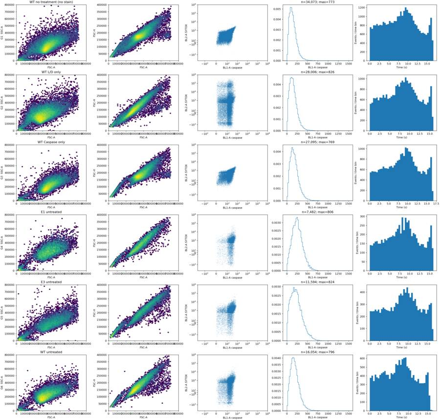
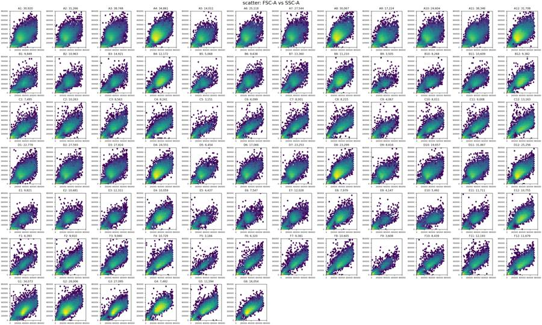
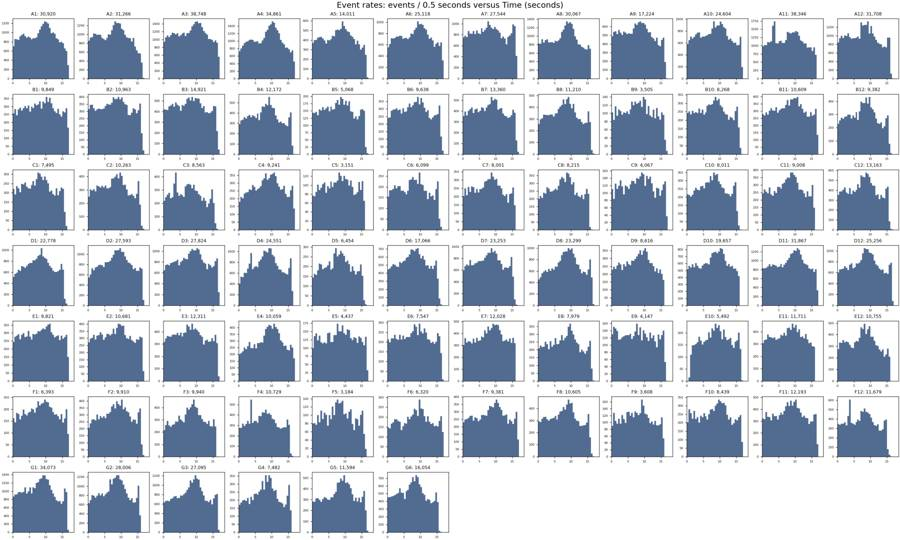
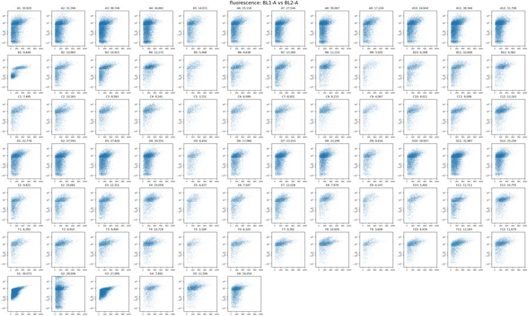
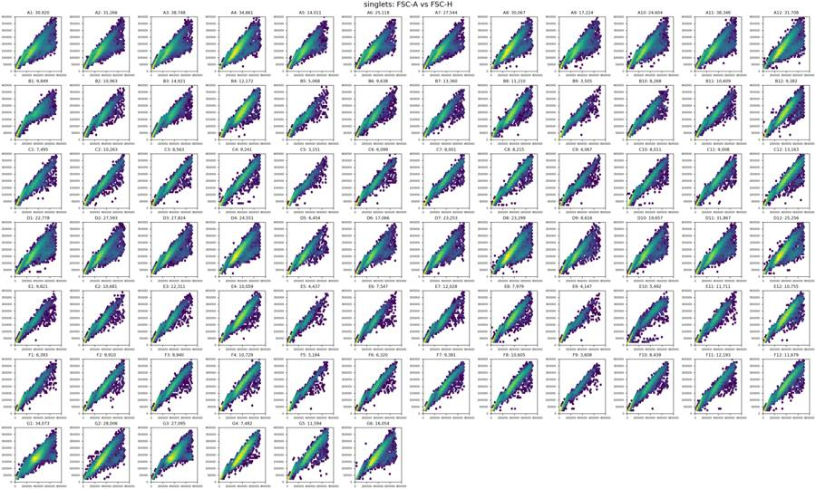
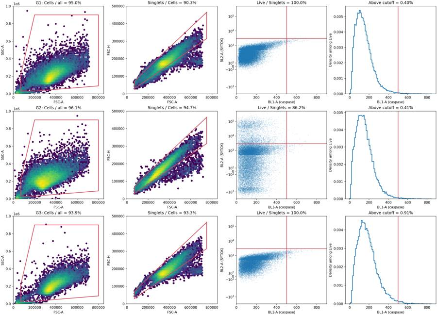
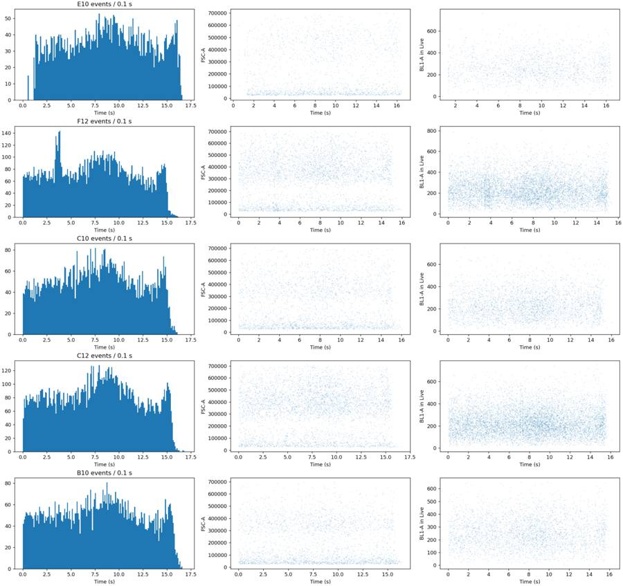
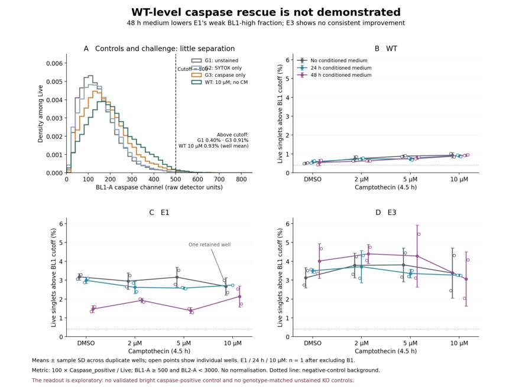
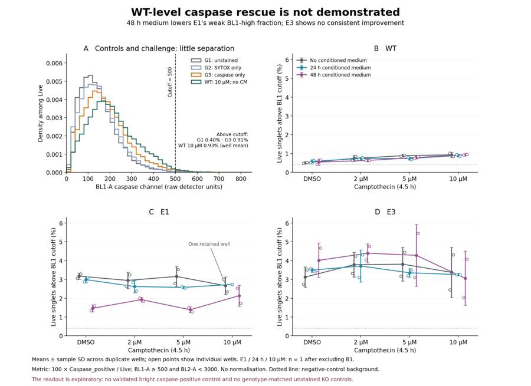

B1_flowkit · GPT-6 Astra · attempt 8i5ZnzA
Batch fk1 · job fk1_B_base_conditioned_media_flowkit_gpt-6-astra · trial B_base_conditioned_media_flowkit__8i5ZnzA. Long tool outputs are cut at 6,000 characters.
Score
0.35
0.35
Minutes
13.2
13.2
Agent cost
$4.22
$4.22
Steps
26
26
Screenshots / images
9
9
1
task prompt (instruction.md)
<environment_context> <cwd>/task</cwd> <shell>bash</shell> <current_date>2026-11-10</current_date> <timezone>Etc/UTC</timezone> <filesystem><workspace_roots><root>/task</root></workspace_roots><permission_profile type="disabled"><file_system type="unrestricted" /></permission_profile></filesystem> </environment_context>
2
user message
# Conditioned-media caspase plate (16-Dec-2022): analyse, conclude, decide
You are the analyst for this experiment: analyse the plate, answer the plan's question, and recommend the next step.
## Inputs (read-only)
| path | content |
|---|---|
| `/task/inputs/plan.md` | Notebook plan for this run: purpose, rationale, reagents, protocol, plate maps, cytometer settings |
| `/task/inputs/plate_layout.csv` | One row per FCS file: `file, well, sample, cell_line, camptothecin, conditioned_media` (plate-map wording) |
| `/task/inputs/raw/` | 78 FCS 3.1 files (Thermo Attune NxT, acquired 16-Dec-2022), wells A1–F12 and G1–G6 |
## Environment
- **Network.** None.
## Channels
Channel names are the labels stored inside the FCS files ($PnS). They may be out of date. Use the plan's reagent list and cytometer settings to decide what each detector measured.
| detector | Name in the FCS file (`$PnS`) |
|---|---|
| FSC-A / FSC-H / FSC-W | FSC-A / FSC-H / FSC-W |
| SSC-A / SSC-H / SSC-W | SSC-A / SSC-H / SSC-W |
| BL1-A / BL1-H / BL1-W | AAV-GFP-GFP-A / AAV-GFP-GFP-H / AAV-GFP-GFP-W |
| BL2-A / BL2-H / BL2-W | AAdvanced livedead-A / AAdvanced livedead-H / AAdvanced livedead-W |
| Time | Time |
## Deliverables (all in `/task/outputs/`)
### 1. `gates.xml`
- Your gating strategy as GatingML 2.0, written with `flowkit.export_gatingml` (see *Software*). It must load with `flowkit.parse_gating_xml("/task/outputs/gates.xml")`.
- Every population in `counts.csv` except `all_events` must be a gate in this file with exactly the same name.
- These gates must be the ones that produced `counts.csv`.
### 2. `counts.csv`
Columns, in order: `file, well, population, role, parent, count, pct_of_parent`.
**Rows**
- One row per FCS file × population, covering all 78 files.
- Every file has the same population set.
**Columns**
- `file`: exact FCS file name. `well`: as in `plate_layout.csv`.
- `population`: your gate names (no commas). Each file also has one row with `population` = `all_events`, `role` = `other`, `parent` = `none`, `count` = total events and `pct_of_parent` empty.
- `role` ∈ {`cells`, `singlets`, `live`, `marker_positive`, `other`}.
- Each of `cells`, `singlets`, `live` and `marker_positive` is used by exactly one population, the same population in every file.
- `other` may be used by any number of populations.
- `parent`: the parent population's name (another population of the same file, or `all_events`). Use `none` only for `all_events`.
- `count`: integer number of events in the population.
- `pct_of_parent`: 100 × count / parent count.
### 3. `flags.csv`
Columns, in order: `file, well, issue_type, evidence, decision`. Exactly one row per FCS file (78 rows).
- Flag any well whose data should not be used, with evidence.
- `issue_type` ∈ {`none`, `clog`, `ran_dry`, `too_few_events`, `saturation`, `bad_control`, `mislabel`, `other`}. If a well has several issues, give the main one here and describe the rest in `evidence`.
- `evidence`: required unless `issue_type` = `none`. It must cite at least one number taken from the data.
- `decision` ∈ {`keep`, `keep_with_note`, `exclude`}.
- Wells marked `exclude` must appear in `answer.json` → `excluded_wells` and must not be used in `condition_summary.csv`.
### 4. `condition_summary.csv`
Columns, in order: `condition, wells, n_wells_used, mean, sd, metric_definition, normalisation_applied`. One row per condition you define.
- `condition`: your name for the condition. Names must be unique and contain no commas.
- `wells`: the plate wells used, separated by `;` (e.g. `X1;X2`).
- `n_wells_used`: integer, equal to the number of wells listed.
- `mean`, `sd`: computed across the listed wells, in the units of your metric. Leave `sd` empty when `n_wells_used` = 1.
- `metric_definition`: which population counts form the numerator and the denominator, or another exact definition.
- `normalisation_applied`: `none`, or the exact formula used.
### 5. `figure.png`
The main result chart.
### 6. `report.md`
These headings, in this order: `## Question`, `## Methods`, `## Results`, `## Conclusion`, `## Caveats`, `## Recommendation`.
### 7. `answer.json`
```
{"question": str,
"comparisons": [{"comparison": str, "a": <condition>, "b": <condition>,
"direction": "increase"|"decrease"|"no_clear_change",
"magnitude": str, "confidence": "high"|"medium"|"low"}],
"overall_answer": "yes: ..." | "partial: ..." | "no: ...",
"assay_verdict": "fit_for_purpose"|"needs_optimisation"|"not_fit_for_purpose",
"next_action": <ACTION>,
"next_change": {"what": str, "from": str, "to": str, "why": str},
"excluded_wells": [well IDs],
"caveats": [str]}
```
- `comparisons`: at least one comparison.
- `a` and `b` must be `condition` values from `condition_summary.csv`.
- `direction` describes `a` relative to `b` (`increase` = a higher than b).
- `magnitude` states the size of the difference, with a number.
- `overall_answer` must start with `yes:`, `partial:` or `no:`.
- `next_action` ∈ {`proceed_as_planned`, `repeat_unchanged`, `repeat_with_change`, `optimise_reagent_or_setting`, `change_treatment_or_timing`, `switch_assay`, `stop`}.
- `next_change`: the change you recommend, as an object: `what` (the step, reagent or condition to change), `from` (its value as run), `to` (the value you recommend) and `why`. Use empty strings if you recommend no change.
- `excluded_wells`: well IDs (e.g. `G1`) that have `decision` = `exclude` in `flags.csv`. Use `[]` if there are none.
## Constraints
- Time budget: 5 hours.
- Do not modify anything in `/task/inputs/`.
## Software (FlowKit version of this task)
- **Python 3 with FlowKit 1.2.3** (plus flowio, numpy, pandas, scipy, matplotlib, openpyxl) is installed. There is no graphical analysis program.
- **Load** each file with `flowkit.Sample(path)`. Build **one** `flowkit.GatingStrategy` for all wells, with `flowkit.Dimension` and `flowkit.gates.RectangleGate`, `PolygonGate` or `EllipsoidGate` (no quadrant or Boolean gates).
- **Gate names** must be valid XML IDs: letters, digits and underscores, starting with a letter (no spaces or `+`).
- **One gate per reported population**, named exactly as the population and nested under its parent population (the first population's gate sits at the root). A population's events are its own gate within its parent.
- **Compensation.** Your choice. Every gate dimension must state its `compensation_ref` (`"uncompensated"`, `"FCS"` for the file's own spillover matrix, or the id of a matrix you add to the strategy).
- **Channels.** FlowKit gate dimensions use the detector ID (`$PnN`, e.g. `BL1-A`), not the text label.
- **Transforms.** You may draw gates on transformed axes (for example `flowkit.transforms.LogicleTransform`, added with `add_transform` and referenced by `transformation_ref`).
- **Save** the strategy with `flowkit.export_gatingml(strategy, open("/task/outputs/gates.xml", "wb"))` and check that it reloads with `flowkit.parse_gating_xml`.
- **Counts.** `counts.csv` must be the counts these saved gates give on each file (`strategy.gate_sample(sample)`), with no per-well changes.
- **Looking at data.** Save plots as PNG files and open the image files to view them.
---
## How you work
You work in a **terminal** (bash, working directory `/task`).
- **Inputs** are in `/task/inputs/` (read-only). **Write every deliverable to `/task/outputs/`.** Only that folder is collected for grading.
- **Limits.** There is no limit on the number of actions; the only limit is the time budget above. Save `gates.xml` and your output files early and often.
3
agent
I’ll read the plan, check the controls and acquisition quality, then apply one gating strategy across the plate. I’ll save the gates, counts, plots and a recommendation in `/task/outputs/`.
tool call · exec
text(await tools.exec_command({cmd:"pwd && rg --files -g 'AGENTS.md' -g '!inputs/raw/**' -g '!outputs/**' /task /installed-agent 2>/dev/null | head -80","max_output_tokens":4000}));
text(await tools.exec_command({cmd:"ls -la /task && cat /task/inputs/plan.md && head -18 /task/inputs/plate_layout.csv","max_output_tokens":14000}));
tool output
Script completed
Wall time 0.1 seconds
Output:
{"chunk_id":"293475","wall_time_seconds":0.00000555,"exit_code":0,"original_token_count":2,"output":"/task\n"}
{"chunk_id":"67c6cc","wall_time_seconds":0.000005143,"exit_code":0,"original_token_count":1574,"output":"total 16\ndrwxr-xr-x 4 root root 4096 Nov 10 16:59 .\ndrwxr-xr-x 21 root root 4096 Nov 10 17:08 ..\ndr-xr-xr-x 3 root root 4096 Nov 10 16:58 inputs\ndrwxr-xr-x 2 root root 4096 Nov 10 16:59 outputs\n# Plan: Caspase activity assay development with progranulin conditioned media (H4 cells)\n\nSource: lab notebook entry (target PGRN; assay development; cell-based; flow; cell type H4). This plan covers the plate acquired on 16-Dec-2022. People's names, and all text written after acquisition, have been removed.\n\n## Purpose\nTo determine if progranulin conditioned media can restore wild-type levels of caspase activity in H4 GRN KO cells.\n\n## Rationale\nPrevious literature evidence suggests that applying exogenous progranulin to cells can restore molecular phenotypes in progranulin deficient lines. Our previous experiment with caspase activity on H4 GRN WT and KO cells showed that GRN KO lines had increased caspase activity. This difference was enhanced after campothesin challenge in both GRN WT and KO cells. In this experiment, we will determine if applying conditioned media from WT cell lines onto KO lines can reduce caspase activity closer to WT levels.\n\n## Materials\n- H4 WT cells\n- H4 PGRN KO E1\n- H4 PGRN KO E3\n- H4 media (DMEM + 10% FBS)\n- CellEvent Caspase-3/7 Green Flow Cytometry Assay Kit\n- SYTOX AAdvanced Dead Cell Stain\n- Camptothecin\n\n## Protocol\n\n### 2022-12-12: conditioned-media donor plate\n- Passage WT H4 cells into 96 well plate (10K/well). This plate is the one the media is collected from.\n\nDonor plate map, as written (12 columns per line):\n\n```\nWT WT WT WT WT WT WT WT WT WT WT WT\nWT WT WT WT WT WT WT WT WT WT WT WT\nWT WT WT WT WT WT WT WT WT WT WT WT\n24hr\nWT WT WT WT WT WT WT WT WT WT WT WT\nWT WT WT WT WT WT WT WT WT WT WT WT\nWT WT WT WT WT WT WT WT WT WT WT WT\n48hr\n```\n\nRed = 24 hr media collection; Purple = 48hr media collection. Cell colours of this map were not preserved in the export.\n\n### 2022-12-13\n2. Collect media from 24hr wells\n3. Spin down at 2000xg for 10min @4C and collect into fresh plate\n\n### 2022-12-14\n4. Collect media from 48hr wells\n5. Spin down at 2000xg for 10min. Collect into fresh plate\n- Passage all H4 lines into 96 well plate for assay (10K/well) according to the assay plate map below.\n\n### Assay plate map\nThe map is as written. Row letters A–H and column numbers 1–12 have been added for orientation.\n\n| | 1 | 2 | 3 | 4 | 5 | 6 | 7 | 8 | 9 | 10 | 11 | 12 |\n|---|---|---|---|---|---|---|---|---|---|---|---|---|\n| A | WT 10uM | WT 5uM | WT 2uM | WT DMSO | WT 10uM | WT 5uM | WT 2uM | WT DMSO | WT 10uM | WT 5uM | WT 2uM | WT DMSO |\n| B | E1 10uM | E1 5uM | E1 2uM | E1 DMSO | E1 10uM | E1 5uM | E1 2uM | E1 DMSO | E1 10uM | E1 5uM | E1 2uM | E1 DMSO |\n| C | E3 10uM | E3 5uM | E3 2uM | E3 DMSO | E3 10uM | E3 5uM | E3 2uM | E3 DMSO | E3 10uM | E3 5uM | E3 2uM | E3 DMSO |\n| D | WT 10uM | WT 5uM | WT 2uM | WT DMSO | WT 10uM | WT 5uM | WT 2uM | WT DMSO | WT 10uM | WT 5uM | WT 2uM | WT DMSO |\n| E | E1 10uM | E1 5uM | E1 2uM | E1 DMSO | E1 10uM | E1 5uM | E1 2uM | E1 DMSO | E1 10uM | E1 5uM | E1 2uM | E1 DMSO |\n| F | E3 10uM | E3 5uM | E3 2uM | E3 DMSO | E3 10uM | E3 5uM | E3 2uM | E3 DMSO | E3 10uM | E3 5uM | E3 2uM | E3 DMSO |\n| G | WT no treatment (no stain) | WT L/D only | WT Caspase only | E1 untreated | E3 untreated | WT untreated | | | | | | |\n| H | 24hr conditioned media | | | | 48hr conditoned media | | | | No condtioned media | | | |\n\nCell colours in the notebook:\n- Rows A–F, columns 1–4: blue (#94B5DD).\n- Rows A–F, columns 5–8: green (#D5F0AD).\n- Rows A–F, columns 9–12: uncoloured.\n- Row G: uncoloured.\n- Row H: \"24hr conditioned media\" is blue; \"48hr conditoned media\" is green; \"No condtioned media\" is uncoloured.\n\n### 2022-12-15\n6. Rinse wells with DMEM and then add conditioned media\n\n### 2022-12-16\n7. Add camptothecin to wells at indicated dose. Incubate for 4.5hr\n8. Run flow\n\n### Staining and acquisition (assay protocol as written in this entry)\n- Aspirate media and wash with PBS\n- Add 150uL trypsin incubate for 5min\n- Add 75uL FBS and collect into 96w round bottom plate\n- spin down 200xg for 5min\n- Add 200uL of Cell Event Caspase 3/7 Detection reagent (1:1000) in flow staining buffer. Incubate for 30min at 37C\n- Prepare SYTOX AAdvanced Dead Cell Stain at 100uM concentration by adding 1000uL DMSO to stain. Mix well\n- During the final 5 minutes of 30min Caspase incubation add 2uL of the 100uM Dead Cell stain (final concentration of 1uM)\n- Analyze the samples without fixing.\n\nFlow cytometer settings: FSC-20; SSC-290; BL1 (caspase)-225, BL2 (AAddvanced Dead Cell Stain)-350\n\n## Acquisition\n- Instrument: Thermo Attune NxT.\n- Date: 16-Dec-2022.\n- Files: 78 FCS files, one per well (A1–F12 and G1–G6).\nfile,well,sample,cell_line,camptothecin,conditioned_media\nCaspase-assay-2-mlk(1)_caspase_Group_A1.fcs,A1,WT 10uM,WT,10uM,24hr conditioned media\nCaspase-assay-2-mlk(1)_caspase_Group_A2.fcs,A2,WT 5uM,WT,5uM,24hr conditioned media\nCaspase-assay-2-mlk(1)_caspase_Group_A3.fcs,A3,WT 2uM,WT,2uM,24hr conditioned media\nCaspase-assay-2-mlk(1)_caspase_Group_A4.fcs,A4,WT DMSO,WT,DMSO,24hr conditioned media\nCaspase-assay-2-mlk(1)_caspase_Group_A5.fcs,A5,WT 10uM,WT,10uM,48hr conditioned media\nCaspase-assay-2-mlk(1)_caspase_Group_A6.fcs,A6,WT 5uM,WT,5uM,48hr conditioned media\nCaspase-assay-2-mlk(1)_caspase_Group_A7.fcs,A7,WT 2uM,WT,2uM,48hr conditioned media\nCaspase-assay-2-mlk(1)_caspase_Group_A8.fcs,A8,WT DMSO,WT,DMSO,48hr conditioned media\nCaspase-assay-2-mlk(1)_caspase_Group_A9.fcs,A9,WT 10uM,WT,10uM,No conditioned media\nCaspase-assay-2-mlk(1)_caspa
… [662 more characters not shown]tool call · exec
const results = await Promise.allSettled([
tools.exec_command({cmd:"python - <<'PY'\nimport flowkit as fk, inspect\nprint('flowkit',fk.__version__)\nprint(inspect.signature(fk.Sample))\nprint(inspect.signature(fk.Dimension))\nprint(inspect.signature(fk.gates.PolygonGate))\nprint(inspect.signature(fk.gates.RectangleGate))\nprint(inspect.signature(fk.GatingStrategy.gate_sample))\nprint(inspect.signature(fk.Matrix))\nprint(inspect.signature(fk.transforms.LogicleTransform))\nPY","max_output_tokens":5000}),
tools.exec_command({cmd:"cat /task/inputs/plate_layout.csv && du -sh /task/inputs/raw && ls -la /task/outputs","max_output_tokens":10000})
]); for (let i=0;i<results.length;i++) text({i,...results[i]});
tool output
Script completed
Wall time 2.6 seconds
Output:
{"i":0,"status":"fulfilled","value":{"chunk_id":"ee64ef","wall_time_seconds":2.448183999,"exit_code":0,"original_token_count":159,"output":"flowkit 1.2.3\n(fcs_path_or_data, sample_id=None, filename_as_id=False, channel_labels=None, compensation=None, null_channel_list=None, ignore_offset_error=False, ignore_offset_discrepancy=False, use_header_offsets=False, cache_original_events=False, subsample=10000)\n(dimension_id, compensation_ref='uncompensated', transformation_ref=None, range_min=None, range_max=None)\n(gate_name, dimensions, vertices, use_complement=False)\n(gate_name, dimensions, use_complement=False)\n(self, sample, cache_events=False, verbose=False)\n(spill_data_or_file, detectors, fluorochromes=None, null_channels=None)\n(param_t, param_w, param_m, param_a)\n"}}
{"i":1,"status":"fulfilled","value":{"chunk_id":"2822f4","wall_time_seconds":0.000004443,"exit_code":0,"original_token_count":1702,"output":"file,well,sample,cell_line,camptothecin,conditioned_media\nCaspase-assay-2-mlk(1)_caspase_Group_A1.fcs,A1,WT 10uM,WT,10uM,24hr conditioned media\nCaspase-assay-2-mlk(1)_caspase_Group_A2.fcs,A2,WT 5uM,WT,5uM,24hr conditioned media\nCaspase-assay-2-mlk(1)_caspase_Group_A3.fcs,A3,WT 2uM,WT,2uM,24hr conditioned media\nCaspase-assay-2-mlk(1)_caspase_Group_A4.fcs,A4,WT DMSO,WT,DMSO,24hr conditioned media\nCaspase-assay-2-mlk(1)_caspase_Group_A5.fcs,A5,WT 10uM,WT,10uM,48hr conditioned media\nCaspase-assay-2-mlk(1)_caspase_Group_A6.fcs,A6,WT 5uM,WT,5uM,48hr conditioned media\nCaspase-assay-2-mlk(1)_caspase_Group_A7.fcs,A7,WT 2uM,WT,2uM,48hr conditioned media\nCaspase-assay-2-mlk(1)_caspase_Group_A8.fcs,A8,WT DMSO,WT,DMSO,48hr conditioned media\nCaspase-assay-2-mlk(1)_caspase_Group_A9.fcs,A9,WT 10uM,WT,10uM,No conditioned media\nCaspase-assay-2-mlk(1)_caspase_Group_A10.fcs,A10,WT 5uM,WT,5uM,No conditioned media\nCaspase-assay-2-mlk(1)_caspase_Group_A11.fcs,A11,WT 2uM,WT,2uM,No conditioned media\nCaspase-assay-2-mlk(1)_caspase_Group_A12.fcs,A12,WT DMSO,WT,DMSO,No conditioned media\nCaspase-assay-2-mlk(1)_caspase_Group_B1.fcs,B1,E1 10uM,E1,10uM,24hr conditioned media\nCaspase-assay-2-mlk(1)_caspase_Group_B2.fcs,B2,E1 5uM,E1,5uM,24hr conditioned media\nCaspase-assay-2-mlk(1)_caspase_Group_B3.fcs,B3,E1 2uM,E1,2uM,24hr conditioned media\nCaspase-assay-2-mlk(1)_caspase_Group_B4.fcs,B4,E1 DMSO,E1,DMSO,24hr conditioned media\nCaspase-assay-2-mlk(1)_caspase_Group_B5.fcs,B5,E1 10uM,E1,10uM,48hr conditioned media\nCaspase-assay-2-mlk(1)_caspase_Group_B6.fcs,B6,E1 5uM,E1,5uM,48hr conditioned media\nCaspase-assay-2-mlk(1)_caspase_Group_B7.fcs,B7,E1 2uM,E1,2uM,48hr conditioned media\nCaspase-assay-2-mlk(1)_caspase_Group_B8.fcs,B8,E1 DMSO,E1,DMSO,48hr conditioned media\nCaspase-assay-2-mlk(1)_caspase_Group_B9.fcs,B9,E1 10uM,E1,10uM,No conditioned media\nCaspase-assay-2-mlk(1)_caspase_Group_B10.fcs,B10,E1 5uM,E1,5uM,No conditioned media\nCaspase-assay-2-mlk(1)_caspase_Group_B11.fcs,B11,E1 2uM,E1,2uM,No conditioned media\nCaspase-assay-2-mlk(1)_caspase_Group_B12.fcs,B12,E1 DMSO,E1,DMSO,No conditioned media\nCaspase-assay-2-mlk(1)_caspase_Group_C1.fcs,C1,E3 10uM,E3,10uM,24hr conditioned media\nCaspase-assay-2-mlk(1)_caspase_Group_C2.fcs,C2,E3 5uM,E3,5uM,24hr conditioned media\nCaspase-assay-2-mlk(1)_caspase_Group_C3.fcs,C3,E3 2uM,E3,2uM,24hr conditioned media\nCaspase-assay-2-mlk(1)_caspase_Group_C4.fcs,C4,E3 DMSO,E3,DMSO,24hr conditioned media\nCaspase-assay-2-mlk(1)_caspase_Group_C5.fcs,C5,E3 10uM,E3,10uM,48hr conditioned media\nCaspase-assay-2-mlk(1)_caspase_Group_C6.fcs,C6,E3 5uM,E3,5uM,48hr conditioned media\nCaspase-assay-2-mlk(1)_caspase_Group_C7.fcs,C7,E3 2uM,E3,2uM,48hr conditioned media\nCaspase-assay-2-mlk(1)_caspase_Group_C8.fcs,C8,E3 DMSO,E3,DMSO,48hr conditioned media\nCaspase-assay-2-mlk(1)_caspase_Group_C9.fcs,C9,E3 10uM,E3,10uM,No conditioned media\nCaspase-assay-2-mlk(1)_caspase_Group_C10.fcs,C10,E3 5uM,E3,5uM,No conditioned media\nCaspase-assay-2-mlk(1)_caspase_Group_C11.fcs,C11,E3 2uM,E3,2uM,No conditioned media\nCaspase-assay-2-mlk(1)_caspase_Group_C12.fcs,C12,E3 DMSO,E3,DMSO,No conditioned media\nCaspase-assay-2-mlk(1)_caspase_Group_D1.fcs,D1,WT 10uM,WT,10uM,24hr conditioned media\nCaspase-assay-2-mlk(1)_caspase_Group_D2.fcs,D2,WT 5uM,WT,5uM,24hr conditioned media\nCaspase-assay-2-mlk(1)_caspase_Group_D3.fcs,D3,WT 2uM,WT,2uM,24hr conditioned media\nCaspase-assay-2-mlk(1)_caspase_Group_D4.fcs,D4,WT DMSO,WT,DMSO,24hr conditioned media\nCaspase-assay-2-mlk(1)_caspase_Group_D5.fcs,D5,WT 10uM,WT,10uM,48hr conditioned media\nCaspase-assay-2-mlk(1)_caspase_Group_D6.fcs,D6,WT 5uM,WT,5uM,48hr conditioned media\nCaspase-assay-2-mlk(1)_caspase_Group_D7.fcs,D7,WT 2uM,WT,2uM,48hr conditioned media\nCaspase-assay-2-mlk(1)_caspase_Group_D8.fcs,D8,WT DMSO,WT,DMSO,48hr conditioned media\nCaspase-assay-2-mlk(1)_caspase_Group_D9.fcs,D9,WT 10uM,WT,10uM,No conditioned media\nCaspase-assay-2-mlk(1)_caspase_Group_D10.fcs,D10,WT 5uM,WT,5uM,No conditioned media\nCaspase-assay-2-mlk(1)_caspase_Group_D11.fcs,D11,WT 2uM,WT,2uM,No conditioned media\nCaspase-assay-2-mlk(1)_caspase_Group_D12.fcs,D12,WT DMSO,WT,DMSO,No conditioned media\nCaspase-assay-2-mlk(1)_caspase_Group_E1.fcs,E1,E1 10uM,E1,10uM,24hr conditioned media\nCaspase-assay-2-mlk(1)_caspase_Group_E2.fcs,E2,E1 5uM,E1,5uM,24hr conditioned media\nCaspase-assay-2-mlk(1)_caspase_Group_E3.fcs,E3,E1 2uM,E1,2uM,24hr conditioned media\nCaspase-assay-2-mlk(1)_caspase_Group_E4.fcs,E4,E1 DMSO,E1,DMSO,24hr conditioned media\nCaspase-assay-2-mlk(1)_caspase_Group_E5.fcs,E5,E1 10uM,E1,10uM,48hr conditioned media\nCaspase-assay-2-mlk(1)_caspase_Group_E6.fcs,E6,E1 5uM,E1,5uM,48hr conditioned media\nCaspase-assay-2-mlk(1)_caspase_Group_E7.fcs,E7,E1 2uM,E1,2uM,48hr conditioned media\nCaspase-assay-2-mlk(1)_caspase_Group_E8.fcs,E8,E1 DMSO,E1,DMSO,48hr conditioned media\nCaspase-assay-2-mlk(1)_caspase_Group_E9.fcs,E9,E1 10uM,E1,10uM,No conditioned media\nCaspase-assay-2-mlk(1)_caspase_Group_E10.fcs,E10,E1 5uM,E1,5uM,No conditi
… [1,869 more characters not shown]tool call · exec
text(await tools.exec_command({cmd:"python - <<'PY'\nfrom pathlib import Path\nimport flowkit as fk, numpy as np\ns=fk.Sample(str(next(Path('/task/inputs/raw').glob('*A1.fcs'))))\nprint(s)\nprint(s.channels.to_string())\nprint(s.metadata)\nprint('quantiles',np.quantile(s.get_events(source='raw'),[0,.01,.1,.5,.9,.99,1],axis=0))\nprint('attributes',[i for i in dir(s) if not i.startswith('_')])\nPY","max_output_tokens":12000}));
tool output
Script completed
Wall time 1.6 seconds
Output:
{"chunk_id":"f1129b","wall_time_seconds":1.394545085,"exit_code":0,"original_token_count":1708,"output":"Sample(v3.1, A1.fcs, 13 channels, 30920 events)\n channel_number pnn pns png pne pnr\n0 1 Time Time 1.0 (0.0, 0.0) 67108864.0\n1 2 FSC-A FSC-A 1.0 (0.0, 0.0) 1048576.0\n2 3 SSC-A SSC-A 1.0 (0.0, 0.0) 1048576.0\n3 4 BL1-A AAV-GFP-GFP-A 1.0 (0.0, 0.0) 1048576.0\n4 5 BL2-A AAdvanced livedead-A 1.0 (0.0, 0.0) 1048576.0\n5 6 FSC-H FSC-H 1.0 (0.0, 0.0) 1048576.0\n6 7 SSC-H SSC-H 1.0 (0.0, 0.0) 1048576.0\n7 8 BL1-H AAV-GFP-GFP-H 1.0 (0.0, 0.0) 1048576.0\n8 9 BL2-H AAdvanced livedead-H 1.0 (0.0, 0.0) 1048576.0\n9 10 FSC-W FSC-W 1.0 (0.0, 0.0) 1024.0\n10 11 SSC-W SSC-W 1.0 (0.0, 0.0) 1024.0\n11 12 BL1-W AAV-GFP-GFP-W 1.0 (0.0, 0.0) 1024.0\n12 13 BL2-W AAdvanced livedead-W 1.0 (0.0, 0.0) 1024.0\n{'par': '13', 'tot': '30920', 'mode': 'L', 'datatype': 'F', 'byteord': '1,2,3,4', 'p1f': 'NA', 'p1l': 'NA', 'p1s': 'Time', 'p1v': 'NA', 'p1n': 'Time', 'p1b': '32', 'p1r': '67108864', 'p1e': '0,0', 'p2f': 'NA', 'p2l': '488', 'p2s': 'FSC-A', 'p2v': '20', 'p2n': 'FSC-A', 'p2b': '32', 'p2r': '1048576', 'p2e': '0,0', 'p3f': 'NA', 'p3l': '488', 'p3s': 'SSC-A', 'p3v': '290', 'p3n': 'SSC-A', 'p3b': '32', 'p3r': '1048576', 'p3e': '0,0', 'p4f': 'NA', 'p4l': '488', 'p4s': 'AAV-GFP-GFP-A', 'p4v': '225', 'p4n': 'BL1-A', 'p4b': '32', 'p4r': '1048576', 'p4e': '0,0', 'p5f': 'NA', 'p5l': '488', 'p5s': 'AAdvanced livedead-A', 'p5v': '350', 'p5n': 'BL2-A', 'p5b': '32', 'p5r': '1048576', 'p5e': '0,0', 'p6f': 'NA', 'p6l': '488', 'p6s': 'FSC-H', 'p6v': '20', 'p6n': 'FSC-H', 'p6b': '32', 'p6r': '1048576', 'p6e': '0,0', 'p7f': 'NA', 'p7l': '488', 'p7s': 'SSC-H', 'p7v': '290', 'p7n': 'SSC-H', 'p7b': '32', 'p7r': '1048576', 'p7e': '0,0', 'p8f': 'NA', 'p8l': '488', 'p8s': 'AAV-GFP-GFP-H', 'p8v': '225', 'p8n': 'BL1-H', 'p8b': '32', 'p8r': '1048576', 'p8e': '0,0', 'p9f': 'NA', 'p9l': '488', 'p9s': 'AAdvanced livedead-H', 'p9v': '350', 'p9n': 'BL2-H', 'p9b': '32', 'p9r': '1048576', 'p9e': '0,0', 'p10f': 'NA', 'p10l': '488', 'p10s': 'FSC-W', 'p10v': '20', 'p10n': 'FSC-W', 'p10b': '32', 'p10r': '1024', 'p10e': '0,0', 'p11f': 'NA', 'p11l': '488', 'p11s': 'SSC-W', 'p11v': '290', 'p11n': 'SSC-W', 'p11b': '32', 'p11r': '1024', 'p11e': '0,0', 'p12f': 'NA', 'p12l': '488', 'p12s': 'AAV-GFP-GFP-W', 'p12v': '225', 'p12n': 'BL1-W', 'p12b': '32', 'p12r': '1024', 'p12e': '0,0', 'p13f': 'NA', 'p13l': '488', 'p13s': 'AAdvanced livedead-W', 'p13v': '350', 'p13n': 'BL2-W', 'p13b': '32', 'p13r': '1024', 'p13e': '0,0', 'cyt': '0A29009 Attune NxT Acoustic Focusing Cytometer (Lasers: BRV6Y)', 'sys': 'SEA11065ATTUNE Microsoft Windows 10 Enterprise LTSC', 'spillover': '6,BL1-A,BL2-A,BL1-H,BL2-H,BL1-W,BL2-W,1.000000,0.000000,0.000000,0.000000,0.000000,0.000000,0.000000,1.000000,0.000000,0.000000,0.000000,0.000000,0.000000,0.000000,1.000000,0.000000,0.000000,0.000000,0.000000,0.000000,0.000000,1.000000,0.000000,0.000000,0.000000,0.000000,0.000000,0.000000,1.000000,0.000000,0.000000,0.000000,0.000000,0.000000,0.000000,1.000000', 'btim': '14:27:29', 'cells': 'NA', 'com': 'NA', 'cytsn': '2AFC228071019', 'date': '16-Dec-2022', 'etim': '14:27:46', 'exp': 'NA', 'fil': 'A1.fcs', 'inst': 'NA', 'originality': 'Original', 'lost': '0', 'op': 'Jeff Huang', 'plateid': 'NA', 'platename': 'Caspase-assay-2-mlk(1)', 'proj': 'caspase', 'smno': 'Group', 'src': 'NA', 'timestep': '0.001', 'vol': '140000', 'wellid': 'A1', '#coincidentcount': '1385', '#flowrate': '500', '#laser1asf': '1.07', '#laser1color': 'Blue', '#laser1delay': '1100', '#laser2asf': '1.09', '#laser2color': 'Red', '#laser2delay': '1516', '#laser3asf': '1.04', '#laser3color': 'Violet', '#laser3delay': '702', '#laser4asf': '1.00', '#laser4color': 'Yellow', '#laser4delay': '273', '#laserconfig': 'BRV6Y', '#p12label': 'GFP', '#p12target': 'AAV-GFP', '#p13target': 'AAdvanced livedead', '#p1label': 'NA', '#p1target': 'NA', '#p4label': 'GFP', '#p4target': 'AAV-GFP', '#p5target': 'AAdvanced livedead', '#p8label': 'GFP', '#p8target': 'AAV-GFP', '#p9target': 'AAdvanced livedead', '#ptdate': '16-Dec-2022', '#ptresult': 'Pass', '#tr1': 'OR_FSC,25000', '#widththreshold': '1000', '#winext': '0', 'hostid': 'SEA11065ATTUNE', 'begindata': '000000008192', 'enddata': '000001616031', 'nextdata': '000000000000', 'beginstext': '000000000000', 'endstext': '000000000000', 'beginanalysis': '000000000000', 'endanalysis': '000000000000'}\nquantiles [[ 1.4000000e-02 1.3280000e+04 -2.2828000e+04 4.0000000e+00\n -1.9281000e+04 2.5128000e+04 1.0000000e+02 2.3000000e+01\n 0.0000000e+00 4.1000000e+01 0.0000000e+00 0.0000000e+00\n 0.0000000e+00]\n [ 2.2800000e-01 2.6183000e+04 1.6055700e+03 1.1000000e+01\n -1.1690000e+03 2.6290950e+04 2.1061900e+03 4.5000000e+01\n 9.1000000e+01 5.2000000e+01 2.4000000e+01 0.0000000e+00\n 0.0000000e+00]\n [ 1.9079000e+00 4.1950600e+04 4.3378000e+03 4.4000000e+01\n -4.1500000e+02 3.9466000e+04 4.1869000e+03 6.9000000e+01\n 2.8500000e+02 7.6000000e+01 3.6000000e+01 0.0000000e+00\n 0.0000000e+00]\n [ 8.5960000e+00 2.4475850e+05 1.7736100e+05 1.5200000e+02\n 4.1800000e+02 1.2548600e+05 1.0656750e+05 1.2200000e+02\n 6.5400000e+02 1.2100000e+02 1.2500000e+02 0.0000000e+00\n 0.0000000e+00]\n [ 1.4509100e+01 4.1736810e+05 3.2153250e+05 3.4300000e+02\n 2.3810000e+03 1.9615960e+05 1.6825110e+05 2.2300000e+02\n 1.3241000e+03 1.5300000e+02 1.4700000e+02 0.0000000e+00\n 2.5000000e+01]\n [ 1.6484000e+01 6.3716155e+05 4.9437581e+05 5.3900000e+02\n 1.4435620e+04 2.9304
… [1,032 more characters not shown]6
agent
The plan identifies BL1 as the caspase-3/7 channel; its “AAV-GFP” label is stale. BL2 measures the SYTOX dead-cell stain. I’ll check the unstained and single-stain controls before setting fluorescence thresholds.
tool call · exec
text(await tools.exec_command({cmd:"mkdir -p /task/outputs/qc && cat > /task/outputs/explore.py <<'PY'\nfrom pathlib import Path\nimport flowkit as fk\nimport numpy as np\nimport pandas as pd\nimport matplotlib\nmatplotlib.use('Agg')\nimport matplotlib.pyplot as plt\nfrom matplotlib.colors import LogNorm\n\nROOT=Path('/task'); OUT=ROOT/'outputs'; Q=OUT/'qc'\nlayout=pd.read_csv(ROOT/'inputs/plate_layout.csv')\nsamples={r.well:fk.Sample(str(ROOT/'inputs/raw'/r.file)) for r in layout.itertuples()}\nchannels=samples['A1'].pnn_labels\nidx={n:channels.index(n) for n in channels}\nrows=[]\nfor r in layout.itertuples():\n s=samples[r.well]; x=s.get_events(source='raw'); t=x[:,idx['Time']]\n rec={'well':r.well,'file':r.file,'n':len(x),'t_min':t.min(),'t_max':t.max(),'start':s.metadata['btim'],'end':s.metadata['etim'],'wellid':s.metadata['wellid'],'lost':s.metadata['lost'],'coincident':s.metadata['#coincidentcount']}\n for ch in channels[1:]:\n a=x[:,idx[ch]]\n for p in [0,1,10,50,90,99,100]: rec[f'{ch}_q{p}']=np.percentile(a,p)\n rec[f'{ch}_zero_pct']=100*np.mean(a==0)\n rec[f'{ch}_near_range_pct']=100*np.mean(a>=.99*float(s.channels.loc[idx[ch],'pnr']))\n rows.append(rec)\npd.DataFrame(rows).to_csv(Q/'raw_summary.csv',index=False)\n\n# Identical axes for all control panels.\nfig,axs=plt.subplots(6,5,figsize=(23,22),layout='constrained')\nfor row,w in enumerate(['G1','G2','G3','G4','G5','G6']):\n x=samples[w].get_events(source='raw'); a=x[:,idx['FSC-A']]; h=x[:,idx['FSC-H']]; ss=x[:,idx['SSC-A']]; b1=x[:,idx['BL1-A']]; b2=x[:,idx['BL2-A']]\n ax=axs[row,0]; ax.hexbin(a,ss,gridsize=65,mincnt=1,bins='log',extent=(0,800000,0,800000)); ax.set(xlim=(0,800000),ylim=(0,800000),xlabel='FSC-A',ylabel=f'{w} SSC-A',title=layout.set_index('well').loc[w,'sample'])\n ax=axs[row,1]; ax.hexbin(a,h,gridsize=65,mincnt=1,bins='log',extent=(0,800000,0,400000)); ax.set(xlim=(0,800000),ylim=(0,400000),xlabel='FSC-A',ylabel='FSC-H')\n ax=axs[row,2]; ax.scatter(b1,b2,s=1,alpha=.12,rasterized=True); ax.set_xscale('symlog',linthresh=100); ax.set_yscale('symlog',linthresh=500); ax.set(xlim=(-500,1e6),ylim=(-5000,1e6),xlabel='BL1-A caspase',ylabel='BL2-A SYTOX')\n ax=axs[row,3]; ax.hist(b1,bins=np.linspace(-100,1600,86),density=True,histtype='step'); ax.set(xlim=(-100,1600),xlabel='BL1-A caspase',title=f'n={len(x):,}; max={b1.max():,.0f}')\n ax=axs[row,4]; ax.hist(x[:,idx['Time']],bins=40); ax.set(xlabel='Time (s)',ylabel='Events / time bin')\nfig.savefig(Q/'controls_raw.png',dpi=130); plt.close(fig)\n\nfor quantity,xch,ych,limits in [('scatter','FSC-A','SSC-A',(0,800000,0,800000)),('singlets','FSC-A','FSC-H',(0,800000,0,400000)),('fluorescence','BL1-A','BL2-A',(-100,1000,-3000,50000))]:\n fig,axs=plt.subplots(7,12,figsize=(25,15),layout='constrained')\n for ax in axs.flat: ax.set_visible(False)\n for r in layout.itertuples():\n ax=axs[ord(r.well[0])-65,int(r.well[1:])-1]; ax.set_visible(True)\n x=samples[r.well].get_events(source='raw'); a=x[:,idx[xch]]; b=x[:,idx[ych]]\n if quantity=='fluorescence':\n ax.scatter(a[::3],b[::3],s=.4,alpha=.15); ax.set_yscale('symlog',linthresh=500)\n else: ax.hexbin(a,b,gridsize=30,mincnt=1,bins='log',extent=limits)\n ax.set(xlim=limits[:2],ylim=limits[2:],title=f'{r.well}: {len(x):,}'); ax.tick_params(labelsize=6); ax.title.set_size(9)\n fig.suptitle(f'{quantity}: {xch} vs {ych}',fontsize=16)\n fig.savefig(Q/f'plate_{quantity}_raw.png',dpi=130); plt.close(fig)\nfig,axs=plt.subplots(7,12,figsize=(25,15),layout='constrained')\nfor ax in axs.flat: ax.set_visible(False)\nfor r in layout.itertuples():\n ax=axs[ord(r.well[0])-65,int(r.well[1:])-1]; ax.set_visible(True)\n x=samples[r.well].get_events(source='raw'); t=x[:,idx['Time']]\n ax.hist(t,bins=np.arange(0,18.51,.5),color='#526b91'); ax.set(title=f'{r.well}: {len(x):,}',xlim=(0,18.5)); ax.tick_params(labelsize=6); ax.title.set_size(9)\nfig.suptitle('Event rates: events / 0.5 seconds versus Time (seconds)',fontsize=16)\nfig.savefig(Q/'plate_time_raw.png',dpi=130); plt.close(fig)\nprint(pd.DataFrame(rows)[['well','n','t_max','BL1-A_q50','BL1-A_q99','BL1-A_q100','BL2-A_q50','BL2-A_q99','BL1-W_zero_pct','BL2-W_zero_pct']].to_string(index=False))\nPY\npython /task/outputs/explore.py","yield_time_ms":1000,"max_output_tokens":13000}));
tool output
Script completed
Wall time 1.2 seconds
Output:
{"chunk_id":"3b77f7","wall_time_seconds":1.001422031,"session_id":1935,"original_token_count":0,"output":""}tool call · exec
text(await tools.exec_command({cmd:"python - <<'PY'\nimport inspect, flowkit as fk\nprint(inspect.getsource(fk.GatingStrategy.add_gate))\nprint(inspect.getsource(fk.GatingStrategy.add_comp_matrix))\nfrom flowkit._models.gating_results import GatingResults\nprint([i for i in dir(GatingResults) if not i.startswith('_')])\nprint(inspect.getsource(GatingResults.get_gate_count))\nprint(inspect.getsource(GatingResults.get_gate_membership))\nPY","max_output_tokens":6000}));
text(await tools.write_stdin({session_id:1935,chars:"","yield_time_ms":1000,"max_output_tokens":13000}));
tool output
Script completed
Wall time 6.5 seconds
Output:
{"chunk_id":"b910ec","wall_time_seconds":1.33322685,"exit_code":0,"original_token_count":1794,"output":" def add_gate(self, gate, gate_path, sample_id=None):\n \"\"\"\n Add a gate to the gating strategy, see `gates` module. The gate ID and gate path\n must be unique in the gating strategy. Custom sample gates may be added by specifying\n an optional sample ID. Note, the gate & gate path must already exist prior to adding\n custom sample gates.\n\n :param gate: instance from a subclass of the Gate class\n :param gate_path: complete ordered tuple of gate names for unique set of gate ancestors\n :param sample_id: text string for specifying given gate as a custom Sample gate\n\n :return: None\n \"\"\"\n if not isinstance(gate, Gate):\n raise TypeError(\"gate must be a sub-class of the Gate class\")\n\n # Verify gate_path is a tuple, else user gets a cryptic error for\n # something that is simple to fix\n if not isinstance(gate_path, tuple):\n raise TypeError(\"gate_path must be a tuple not %s\" % str(type(gate_path)))\n\n # make string representation of parent path, used for anytree Resolver later\n parent_abs_gate_path = \"/\" + \"/\".join(gate_path)\n\n # Verify gate name is not \".\" or \"..\" as these are incompatible w/ the\n # current version of anytree (see open issue https://github.com/c0fec0de/anytree/issues/269)\n if gate.gate_name in ['.', '..']:\n raise GateTreeError(\n \"Gate name '%s' is incompatible with FlowKit. Gate was found in path: %s\" %\n (gate.gate_name, parent_abs_gate_path)\n )\n\n # We need the parent gate (via its node) for 2 reasons:\n # 1) To verify the parent exists when creating a new node\n # 2) Verify the parent is NOT a QuadrantGate, as only\n # Quadrants of a QuadrantGate can be a parent.\n try:\n parent_node = self.resolver.get(self._gate_tree, parent_abs_gate_path)\n except anytree.ResolverError:\n # this should never happen unless someone messed with the gate tree\n raise GateTreeError(\"Parent gate %s doesn't exist\" % parent_abs_gate_path)\n\n # If parent is root, then there is no parent gate\n if parent_node.name != 'root':\n if isinstance(parent_node.gate, fk_gates.QuadrantGate):\n raise GateTreeError(\n \"Parent gate %s is a QuadrantGate and cannot be used as a parent gate directly. \"\n \"Only an individual Quadrant can be used as a parent.\"\n )\n\n # determine if gate already exists with name and path\n abs_gate_path = list(gate_path) + [gate.gate_name]\n abs_gate_path = \"/\" + \"/\".join(abs_gate_path)\n try:\n node = self.resolver.get(self._gate_tree, abs_gate_path)\n except anytree.ResolverError:\n # this is expected if the gate doesn't already exist\n node = None\n\n if node is not None:\n # A node was found. If no sample ID is given, the gate\n # already exists and is the template gate.\n if sample_id is None:\n raise GateTreeError(\"Gate %s already exists\" % abs_gate_path)\n else:\n # Attempt to create sample custom gate, GateNode.add_gate will\n # raise a GateTreeError if it already exists.\n node.add_custom_gate(sample_id, gate)\n else:\n # We need to create a new node in the tree.\n GateNode(gate, parent_node)\n self._rebuild_dag()\n\n def add_comp_matrix(self, matrix_id, matrix):\n \"\"\"\n Add a compensation matrix to the gating strategy, see `transforms` module. The matrix ID must be unique in the\n gating strategy.\n\n :param matrix_id: Text string used to identify the matrix (cannot be 'uncompensated' or 'fcs')\n :param matrix: an instance of the Matrix class\n :return: None\n \"\"\"\n # Technically, the GML 2.0 spec states 'FCS' (note uppercase) is reserved,\n # but we'll cover that case-insensitive\n if matrix_id == 'uncompensated' or matrix_id.lower() == 'fcs':\n raise ValueError(\n \"Matrix IDs 'uncompensated' and 'FCS' are reserved compensation references \" +\n \"used in Dimension instances to specify that channel data should either be \" +\n \"uncompensated or compensated using the spill value from a Sample's metadata\"\n )\n\n # Only accept Matrix class instances as we need the ID\n if not isinstance(matrix, Matrix):\n raise TypeError(\"matrix must be an instance of the Matrix class\")\n\n if matrix_id in self.comp_matrices:\n raise KeyError(\"Matrix ID '%s' is already defined\" % matrix_id)\n\n self.comp_matrices[matrix_id] = matrix\n\n['get_gate_absolute_percent', 'get_gate_count', 'get_gate_membership', 'get_gate_relative_percent']\n def get_gate_count(self, gate_name, gate_path=None):\n \"\"\"\n Retrieve event count for the specified gate ID for the gating results sample\n\n :param gate_name: text string of a gate name\n :param gate_path: tuple of ancestor gate names\n :return: integer count of events in gate ID\n \"\"\"\n results = self._filter_gate_report(gate_name, gate_path=gate_path)\n\n return results['count'].values[0]\n\n def get_gate_membership(self, gate_name, gate_path=None):\n \"\"\"\n Retrieve a boolean array indicating gate membership for the events in the GatingResults sample.\n Note, the same gate ID may be found in multiple gate paths, i.e. the gate ID can be ambiguous.\n In this case,
… [1,651 more characters not shown]tool call · exec
text(await tools.exec_command({cmd:"python - <<'PY'\nimport pandas as pd\np=pd.read_csv('/task/outputs/qc/raw_summary.csv')\nprint(p[['well','n','t_max','BL1-A_q50','BL1-A_q99','BL1-A_q100','BL2-A_q50','BL2-A_q99','BL1-W_zero_pct','BL2-W_zero_pct']].to_string(index=False))\nPY","max_output_tokens":13000}));
const r=await tools.view_image({path:"/task/outputs/qc/controls_raw.png"}); image(r.image_url);
tool output
Script completed Wall time 0.5 seconds Output:
{"chunk_id":"295a84","wall_time_seconds":0.252368073,"exit_code":0,"original_token_count":2094,"output":"well n t_max BL1-A_q50 BL1-A_q99 BL1-A_q100 BL2-A_q50 BL2-A_q99 BL1-W_zero_pct BL2-W_zero_pct\n A1 30920 16.721 152.0 539.00 805.0 418.0 14435.62 100.00000 80.142303\n A2 31266 16.571 147.0 513.00 795.0 365.0 15966.35 100.00000 83.061473\n A3 38748 16.778 142.0 509.00 804.0 327.0 9448.65 100.00000 85.668938\n A4 34861 16.734 159.0 474.00 797.0 403.0 12930.40 100.00000 81.363128\n A5 14011 16.581 160.0 528.90 750.0 522.0 72871.10 100.00000 77.453429\n A6 25118 16.726 151.0 521.00 794.0 439.0 12494.70 100.00000 81.762083\n A7 27544 16.495 149.0 506.00 803.0 409.0 10087.40 100.00000 83.350276\n A8 30067 15.853 159.0 482.00 810.0 468.0 10433.56 100.00000 81.497988\n A9 17224 16.515 169.0 537.00 769.0 524.0 10492.70 100.00000 76.584998\n A10 24604 16.639 164.0 527.00 785.0 518.0 10698.43 100.00000 78.718907\n A11 38346 16.331 156.0 517.00 810.0 439.0 8826.95 100.00000 82.660512\n A12 31708 16.608 161.0 492.93 787.0 565.0 13294.69 100.00000 80.336193\n B1 9849 16.792 142.0 596.00 803.0 242.0 1896.52 100.00000 96.771246\n B2 10963 16.731 151.0 561.00 804.0 502.0 9008.66 100.00000 82.824045\n B3 14921 16.753 153.0 560.80 802.0 477.0 5912.40 100.00000 87.353395\n B4 12172 16.570 222.0 579.58 801.0 893.0 8150.51 100.00000 82.172198\n B5 5068 16.550 152.0 553.00 712.0 664.0 15837.82 100.00000 72.020521\n B6 9638 16.830 173.0 558.63 781.0 677.5 10187.35 100.00000 77.038805\n B7 13360 16.719 161.0 536.00 795.0 572.0 9320.10 100.00000 79.895210\n B8 11210 16.671 209.0 563.00 796.0 987.0 14192.39 100.00000 66.003568\n B9 3505 16.823 150.0 579.96 770.0 837.0 16369.48 100.00000 63.823110\n B10 8268 16.540 168.0 579.00 766.0 697.0 10491.48 100.00000 73.730044\n B11 10609 16.705 168.0 567.00 788.0 640.0 8845.08 100.00000 77.330568\n B12 9382 16.354 232.0 604.38 812.0 1024.0 13613.49 100.00000 71.477297\n C1 7495 16.445 170.0 610.06 823.0 1034.0 10116.24 100.00000 61.107405\n C2 10263 16.756 174.0 602.38 819.0 927.0 11578.08 100.00000 65.107668\n C3 8563 16.210 180.0 610.38 805.0 1018.0 12382.18 100.00000 63.587528\n C4 9241 16.738 189.0 612.00 813.0 1298.0 15435.00 100.00000 54.561195\n C5 3151 15.847 147.0 594.00 818.0 1405.0 13221.50 100.00000 49.476357\n C6 6099 16.406 174.0 590.00 810.0 1161.0 12299.00 100.00000 58.370225\n C7 8001 15.962 180.0 631.00 791.0 1089.0 11015.00 100.00000 64.491939\n C8 8215 16.038 199.0 632.58 806.0 1370.0 17394.20 100.00000 54.595253\n C9 4067 16.742 159.0 591.68 812.0 1298.0 13443.38 100.00000 53.675928\n C10 8011 16.063 179.0 622.80 828.0 1225.0 12843.40 100.00000 57.046561\n C11 9008 15.913 184.0 612.93 801.0 1023.0 9356.93 100.00000 69.438277\n C12 13163 16.730 212.0 629.76 809.0 1202.0 12755.68 100.00000 62.235053\n D1 22778 16.576 167.0 538.00 781.0 549.0 8322.45 99.99122 79.164106\n D2 27593 16.720 166.0 502.08 781.0 461.0 7105.08 100.00000 83.213134\n D3 27824 16.714 169.0 501.00 781.0 467.0 8329.55 100.00000 83.525014\n D4 24551 16.284 179.0 508.00 760.0 561.0 12471.00 100.00000 82.106635\n D5 6454 16.346 178.0 529.00 783.0 645.0 11112.99 100.00000 75.240161\n D6 17066 16.372 169.0 512.35 753.0 566.0 8751.15 100.00000 81.079339\n D7 23253 16.449 171.0 504.00 802.0 592.0 10189.24 100.00000 81.391648\n D8 23299 16.660 177.0 517.00 815.0 748.0 20418.00 100.00000 76.956093\n D9 8616 15.873 172.0 541.00 739.0 679.5 10710.20 100.00000 75.417827\n D10 19657 15.928 179.0 529.00 751.0 625.0 8102.44 100.00000 81.436638\n D11 31867 16.691 176.0 515.34 766.0 528.0 6532.08 100.00000 85.687388\n D12 25256 16.702 172.0 505.00 823.0 677.0 11323.85 100.00000 82.241844\n E1 9821 16.765 143.0 521.80 767.0 494.0 6545.80 100.00000 83.290907\n E2 10681 16.762 172.0 540.20 799.0 601.0 7355.40 100.00000 81.602846\n E3 12311 16.697 170.0 524.00 774.0 559.0 8232.80 100.00000 81.341889\n E4 10059 16.771 244.0 589.00 792.0 1080.0 10798.14 100.00000 68.744408\n E5 4437 16.629 147.0 503.00 709.0 655.0 8487.56 100.00000 74.599955\n E6 7547 16.611 174.0 521.08 780.0 683.0 8472.88 100.00000 75.460448\n E7 12028
… [2,560 more characters not shown]
tool call · exec
text(await tools.write_stdin({session_id:1935,chars:"","yield_time_ms":1000,"max_output_tokens":1000}));
for (const path of ["/task/outputs/qc/plate_time_raw.png","/task/outputs/qc/plate_scatter_raw.png"]) {
const r=await tools.view_image({path}); image(r.image_url);
}
tool output
Script failed
Wall time 5.0 seconds
Output:
{"chunk_id":"402794","wall_time_seconds":5.00119083,"session_id":1935,"original_token_count":0,"output":""}
Script error:
unable to locate image at `/task/outputs/qc/plate_time_raw.png`: No such file or directory (os error 2)tool call · exec
text(await tools.exec_command({cmd:"ls -lh /task/outputs/qc","max_output_tokens":1000}));
const r=await tools.view_image({path:"/task/outputs/qc/plate_scatter_raw.png"}); image(r.image_url);
tool output
Script completed Wall time 0.1 seconds Output:
{"chunk_id":"81ee51","wall_time_seconds":0.00000445,"exit_code":0,"original_token_count":96,"output":"total 7.3M\n-rw-r--r-- 1 root root 1.8M Nov 10 17:10 controls_raw.png\n-rw-r--r-- 1 root root 1.8M Nov 10 17:10 plate_fluorescence_raw.png\n-rw-r--r-- 1 root root 2.1M Nov 10 17:10 plate_scatter_raw.png\n-rw-r--r-- 1 root root 1.6M Nov 10 17:10 plate_singlets_raw.png\n-rw-r--r-- 1 root root 129K Nov 10 17:10 plate_time_raw.png\n-rw-r--r-- 1 root root 73K Nov 10 17:10 raw_summary.csv\n"}
11
agent
BL1 fluorescence is very low across the plate, including the camptothecin-treated wells, and the caspase-only control largely overlaps the unstained control. That limits what this run can say about rescue. I’ll quantify the overlap and check whether any wells also have acquisition or staining problems.
tool call · exec
for (const path of ["/task/outputs/qc/plate_time_raw.png","/task/outputs/qc/plate_fluorescence_raw.png","/task/outputs/qc/plate_singlets_raw.png"]) {
const r=await tools.view_image({path}); image(r.image_url);
}
text(await tools.write_stdin({session_id:1935,chars:"","yield_time_ms":1000,"max_output_tokens":1000}));
tool output
Script completed Wall time 0.2 seconds Output:



{"chunk_id":"3afb6a","wall_time_seconds":0.000003706,"exit_code":0,"original_token_count":2094,"output":"Warning: truncated output (original token count: 2094)\nTotal output lines: 79\n\nwell n t_max BL1-A_q50 BL1-A_q99 BL1-A_q100 BL2-A_q50 BL2-A_q99 BL1-W_zero_pct BL2-W_zero_pct\n A1 30920 16.721 152.0 539.00 805.0 418.0 14435.62 100.00000 80.142303\n A2 31266 16.571 147.0 513.00 795.0 365.0 15966.35 100.00000 83.061473\n A3 38748 16.778 142.0 509.00 804.0 327.0 9448.65 100.00000 85.668938\n A4 34861 16.734 159.0 474.00 797.0 403.0 12930.40 100.00000 81.363128\n A5 14011 16.581 160.0 528.90 750.0 522.0 72871.10 100.00000 77.453429\n A6 25118 16.726 151.0 521.00 794.0 439.0 12494.70 100.00000 81.762083\n A7 27544 16.495 149.0 506.00 803.0 409.0 10087.40 100.00000 83.350276\n A8 30067 15.853 159.0 482.00 810.0 468.0 10433.56 100.00000 81.497988\n A9 17224 16.515 169.0 537.00 769.0 524.0 10492.70 100.00000 76.584998\n A10 24604 16.639 164.0 527.00 785.0 518.0 10698.43 100.00000 78.718907\n A11 38346 16.331 156.0 517.00 810.0 439.0 8826.95 100.00000 82.660512\n A12 31708 16.608 161.0 492.93 787.0 565.0 13294.69 100.00000 80.336193\n B1 9849 16.792 142.0 596.00 803.0 242.0 1896.52 100.00000 96.771246\n B2 10963 16.731 151.0 561.00 804.0 502.0 9008.66 100.00000 82.824045\n B3 14921 16.753 153.0 560.80 802.0 477.0 5912.40 100.00000 87.353395\n B4 12172 16.570 222.0 579.58 801.0 893.0 8150.51 100.00000 82.172198\n B5 5068 16.550 152.0 553.00 712.0 664.0 15837.82 100.00000 72.020521\n B6 9638 16.830 173.0 558.63 781.0 677.5 10187.35 100.00000 …1094 tokens truncated…860 240.0 612.00 794.0 950.0 8695.34 100.00000 76.550442\n F1 6393 16.710 165.0 583.00 744.0 966.0 7975.20 100.00000 64.680119\n F2 9910 16.619 185.0 609.91 800.0 958.0 9157.49 100.00000 69.283552\n F3 9940 15.886 190.0 617.00 809.0 1018.0 9056.66 100.00000 65.714286\n F4 10729 16.326 211.0 622.00 814.0 1144.0 12463.48 100.00000 64.386243\n F5 3184 16.301 146.5 587.68 784.0 867.5 7813.73 100.00000 67.619347\n F6 6320 16.815 191.0 643.62 830.0 1038.5 10425.35 100.00000 68.591772\n F7 9381 16.684 195.0 614.20 828.0 1004.0 8608.80 100.00000 68.841275\n F8 10605 16.653 211.0 638.00 816.0 1190.0 10529.96 100.00000 64.007544\n F9 3608 15.814 158.0 560.79 827.0 984.0 7609.60 100.00000 63.470067\n F10 8439 16.746 187.0 606.62 800.0 1027.0 7952.92 100.00000 67.188055\n F11 12193 16.716 188.0 617.08 814.0 1046.0 7747.32 100.00000 68.186664\n F12 11679 16.118 212.0 618.22 822.0 1157.0 10659.98 100.00000 65.074065\n G1 34073 16.666 131.0 437.00 773.0 406.0 1782.00 100.00000 98.588325\n G2 28006 15.946 140.0 449.00 826.0 640.0 116359.40 100.00000 73.673499\n G3 27095 16.755 167.0 500.00 769.0 465.0 1735.06 100.00000 98.601218\n G4 7482 15.918 246.0 596.38 806.0 818.0 8451.59 100.00000 74.338412\n G5 11594 16.605 215.0 633.07 824.0 1079.5 10398.96 100.00000 66.827669\n G6 16054 16.439 178.0 516.47 796.0 588.0 5031.81 100.00000 91.765292\n"}tool call · exec
text(await tools.exec_command({cmd:"python - <<'PY'\nimport pandas as pd\ns=pd.read_csv('/task/outputs/qc/raw_summary.csv')\nprint(s[['well','FSC-A_q100','FSC-H_q100','SSC-A_q100','BL2-A_q100','SSC-A_near_range_pct','BL2-A_near_range_pct']].to_string(index=False))\nPY","max_output_tokens":7000}));
tool output
Script completed
Wall time 0.4 seconds
Output:
{"chunk_id":"0c8cde","wall_time_seconds":0.270331,"exit_code":0,"original_token_count":1916,"output":"well FSC-A_q100 FSC-H_q100 SSC-A_q100 BL2-A_q100 SSC-A_near_range_pct BL2-A_near_range_pct\n A1 707042.0 441175.0 1048105.0 185690.0 0.003234 0.0\n A2 706370.0 395997.0 923717.0 139493.0 0.000000 0.0\n A3 705341.0 434958.0 1033712.0 134907.0 0.000000 0.0\n A4 710472.0 412856.0 1048575.0 164281.0 0.002869 0.0\n A5 698538.0 396994.0 1048575.0 166916.0 0.007137 0.0\n A6 704259.0 419584.0 1048575.0 130930.0 0.003981 0.0\n A7 703561.0 397212.0 798480.0 160488.0 0.000000 0.0\n A8 709534.0 392585.0 1048575.0 154894.0 0.006652 0.0\n A9 708799.0 397541.0 1048575.0 166596.0 0.011612 0.0\n A10 709434.0 432313.0 957740.0 122435.0 0.000000 0.0\n A11 708280.0 415643.0 1048575.0 126939.0 0.005216 0.0\n A12 710978.0 426330.0 1048575.0 147803.0 0.006308 0.0\n B1 705050.0 369237.0 1048575.0 73746.0 0.020307 0.0\n B2 703393.0 373806.0 1048575.0 72999.0 0.009122 0.0\n B3 704964.0 391916.0 851847.0 53231.0 0.000000 0.0\n B4 705244.0 407709.0 1048575.0 70747.0 0.016431 0.0\n B5 701214.0 391019.0 759936.0 179897.0 0.000000 0.0\n B6 709825.0 382877.0 1048575.0 199435.0 0.010376 0.0\n B7 707396.0 366320.0 1048575.0 88163.0 0.014970 0.0\n B8 705739.0 397348.0 1048575.0 148747.0 0.008921 0.0\n B9 704489.0 385129.0 1048575.0 155034.0 0.028531 0.0\n B10 704971.0 384763.0 816790.0 67210.0 0.000000 0.0\n B11 704738.0 387413.0 1048575.0 56406.0 0.009426 0.0\n B12 707410.0 412219.0 1048575.0 124462.0 0.010659 0.0\n C1 707054.0 387098.0 1048575.0 47628.0 0.026684 0.0\n C2 708109.0 404299.0 1048575.0 81375.0 0.019487 0.0\n C3 705618.0 384435.0 1048575.0 74987.0 0.023356 0.0\n C4 706042.0 414496.0 1048575.0 118525.0 0.054107 0.0\n C5 698763.0 419738.0 889346.0 97710.0 0.000000 0.0\n C6 708278.0 405012.0 1048575.0 86877.0 0.016396 0.0\n C7 708192.0 394768.0 1048575.0 61289.0 0.024997 0.0\n C8 707925.0 403223.0 1048575.0 109934.0 0.024346 0.0\n C9 706074.0 384587.0 801424.0 52966.0 0.000000 0.0\n C10 712231.0 404817.0 992590.0 45477.0 0.000000 0.0\n C11 705477.0 388592.0 1048575.0 44236.0 0.033304 0.0\n C12 708485.0 407630.0 1048575.0 98016.0 0.022791 0.0\n D1 706571.0 448834.0 823565.0 90155.0 0.000000 0.0\n D2 709330.0 419859.0 1048575.0 97794.0 0.003624 0.0\n D3 706304.0 393160.0 783315.0 111796.0 0.000000 0.0\n D4 709510.0 388539.0 1048575.0 119759.0 0.008146 0.0\n D5 705131.0 404117.0 989169.0 91103.0 0.000000 0.0\n D6 710129.0 441361.0 1027386.0 110684.0 0.000000 0.0\n D7 705078.0 421552.0 1045857.0 102103.0 0.004301 0.0\n D8 706975.0 421346.0 1048575.0 151305.0 0.004292 0.0\n D9 705196.0 396447.0 844130.0 114324.0 0.000000 0.0\n D10 708767.0 461733.0 1000588.0 99065.0 0.000000 0.0\n D11 709351.0 454034.0 996208.0 87593.0 0.000000 0.0\n D12 708384.0 424207.0 1048575.0 115945.0 0.003959 0.0\n E1 703050.0 401528.0 1048575.0 45563.0 0.010182 0.0\n E2 705822.0 387841.0 707244.0 57288.0 0.000000 0.0\n E3 702505.0 376946.0 1005489.0 87516.0 0.000000 0.0\n E4 708263.0 394388.0 1048575.0 122397.0 0.009941 0.0\n E5 706715.0 374629.0 1048575.0 50985.0 0.045076 0.0\n E6 700406.0 383557.0 1048575.0 70257.0 0.039751 0.0\n E7 703278.0 390974.0 881165.0 56019.0 0.000000 0.0\n E8 705849.0 400304.0 1048575.0 89424.0 0.012533 0.0\n E9 706478.0 379340.0 962685.0 34076.0 0.000000 0.0\n E10 703953.0 382001.0 1048575.0 113632.0 0.072833 0.0\n E11 707865.0 390153.0 1048575.0 35548.0 0.
… [1,894 more characters not shown]tool call · exec
text(await tools.exec_command({cmd:"cat > /task/outputs/analyse.py <<'PY'\n\"\"\"Offline, reproducible FlowKit analysis of the 16-Dec-2022 caspase plate.\nRun: python /task/outputs/analyse.py\nInputs are opened read-only; all products are written below /task/outputs.\n\"\"\"\nfrom pathlib import Path\nimport json\nimport numpy as np\nimport pandas as pd\nimport scipy.stats as st\nimport flowkit as fk\nimport matplotlib\nmatplotlib.use('Agg')\nimport matplotlib.pyplot as plt\nfrom matplotlib.patches import Polygon\n\nROOT = Path('/task')\nOUT = ROOT / 'outputs'\nQC = OUT / 'qc'\nQC.mkdir(parents=True, exist_ok=True)\nlayout = pd.read_csv(ROOT/'inputs/plate_layout.csv')\nsamples = {r.well: fk.Sample(str(ROOT/'inputs/raw'/r.file)) for r in layout.itertuples()}\nidx = {ch:i for i,ch in enumerate(samples['A1'].pnn_labels)}\nCELL_VERTICES = [(70000,30000),(200000,30000),(800000,90000),(800000,900000),(200000,900000),(70000,220000)]\nSINGLET_VERTICES = [(70000,29400),(750000,315000),(750000,465000),(200000,150000),(70000,70000)]\nLIVE_THRESHOLD = 3000.0\nMARKER_THRESHOLD = 500.0\n\ndef dim(ch, lo=None, hi=None):\n return fk.Dimension(ch, compensation_ref='uncompensated', range_min=lo, range_max=hi)\n\ndef make_strategy():\n gs = fk.GatingStrategy()\n gs.add_gate(fk.gates.PolygonGate('Cells', [dim('FSC-A'), dim('SSC-A')], CELL_VERTICES), ('root',))\n gs.add_gate(fk.gates.PolygonGate('Singlets', [dim('FSC-A'), dim('FSC-H')], SINGLET_VERTICES), ('root','Cells'))\n gs.add_gate(fk.gates.RectangleGate('Live', [dim('BL2-A',hi=LIVE_THRESHOLD)]), ('root','Cells','Singlets'))\n gs.add_gate(fk.gates.RectangleGate('Caspase_positive', [dim('BL1-A',lo=MARKER_THRESHOLD)]), ('root','Cells','Singlets','Live'))\n gs.add_gate(fk.gates.RectangleGate('Dead', [dim('BL2-A',lo=LIVE_THRESHOLD)]), ('root','Cells','Singlets'))\n gs.add_gate(fk.gates.RectangleGate('Dead_caspase_positive', [dim('BL1-A',lo=MARKER_THRESHOLD)]), ('root','Cells','Singlets','Dead'))\n return gs\n\nstrategy = make_strategy()\nwith (OUT/'gates.xml').open('wb') as f:\n fk.export_gatingml(strategy, f)\n# Use the re-imported strategy for every reported count.\nstrategy = fk.parse_gating_xml(str(OUT/'gates.xml'))\nroles = {'Cells':('cells','all_events'), 'Singlets':('singlets','Cells'), 'Live':('live','Singlets'),\n 'Caspase_positive':('marker_positive','Live'), 'Dead':('other','Singlets'),\n 'Dead_caspase_positive':('other','Dead')}\ncounts = []\nresults = {}\nmetrics = []\nfor r in layout.itertuples():\n s = samples[r.well]; x = s.get_events(source='raw'); gr = strategy.gate_sample(s)\n results[r.well] = gr\n n = {'all_events':s.event_count}\n n.update({g:int(gr.get_gate_count(g)) for g in roles})\n counts.append([r.file,r.well,'all_events','other','none',s.event_count,np.nan])\n for g,(role,parent) in roles.items():\n counts.append([r.file,r.well,g,role,parent,n[g],100*n[g]/n[parent] if n[parent] else np.nan])\n m = {'file':r.file,'well':r.well,**{k:getattr(r,k) for k in ['sample','cell_line','camptothecin','conditioned_media']},**n}\n live = gr.get_gate_membership('Live'); sg = gr.get_gate_membership('Singlets')\n m.update(caspase_pct=100*n['Caspase_positive']/n['Live'],dead_pct=100*n['Dead']/n['Singlets'],\n all_singlet_caspase_pct=100*(n['Caspase_positive']+n['Dead_caspase_positive'])/n['Singlets'],\n cells_pct=100*n['Cells']/n['all_events'],singlets_pct=100*n['Singlets']/n['Cells'])\n for gate,mask in [('live',live),('singlets',sg)]:\n for ch in ['BL1-A','BL2-A']:\n a = x[mask,idx[ch]]\n for p in [1,10,25,50,75,90,95,99,99.5,99.9,100]: m[f'{gate}_{ch}_q{p:g}']=np.percentile(a,p)\n m['BL1-A_max_all'] = float(x[:,idx['BL1-A']].max())\n m['BL1-W_zero_pct_all'] = 100*np.mean(x[:,idx['BL1-W']]==0)\n t = x[:,idx['Time']]\n m.update(time_start=float(t.min()),time_end=float(t.max()),time_largest_gap=float(np.diff(t).max()),\n raw_events=len(x),BL1_range=float(s.channels.loc[idx['BL1-A'],'pnr']))\n # Interior half-second bins avoid acquisition endpoints.\n hist,edges=np.histogram(t,bins=np.arange(.5,15.51,.5))\n m['interior_min_bin_to_median'] = float(hist.min()/np.median(hist))\n m['interior_max_bin_to_median'] = float(hist.max()/np.median(hist))\n m['tail_rate_ratio'] = float(np.mean((t>=t.max()-2)&(t<=t.max()))/(2/(t.max()-t.min())))\n m['metadata_well_match'] = s.metadata['wellid']==r.well\n m['BL1_saturation_count'] = int(np.sum(x[:,idx['BL1-A']]>=1048575))\n m['BL2_saturation_count'] = int(np.sum(x[:,idx['BL2-A']]>=1048575))\n m['SSC_saturation_count'] = int(np.sum(x[:,idx['SSC-A']]>=1048575))\n metrics.append(m)\ncounts = pd.DataFrame(counts,columns=['file','well','population','role','parent','count','pct_of_parent'])\ncounts.to_csv(OUT/'counts.csv',index=False)\nmetrics = pd.DataFrame(metrics)\nmetrics.to_csv(QC/'well_metrics.csv',index=False)\n\n# Numerical control calibration (thresholds rounded above the 99th percentiles).\ncontrol_cal = metrics[metrics.well.isin(['G1','G2','G3'])][['well','Singlets','Live','Caspase_positive','caspase_pct','dead_pct','live_BL1-A_q50','live_BL1-A_q99','live_BL1-A_q99.5','live_BL1-A_q99.9','singlets_BL2-A_q99','singlets_BL2-A_q99.5','singlets_BL2-A_q99.9']]\nprint(control_cal.to_string(index=False))\nprint(metrics[['well','Cells','Singlets','Live','Caspase_positive','caspase_pct','dead_pct','live_BL1-A_q50']].to_string(index=False))\n\nfig,axs=plt.subplots(3,4,figsize=(18,13),layout='constrained')\nfor i,w in enumerate(['G1','G2','G3']):\n s=samples[w]; x=s.get_events(source='raw'); gr=results[w]; sg=gr.get_gate_membership('Singlets'); cell=gr.get_gate_membership('Cells'); live=gr.get_gate_membership('Live')\n ax=axs[i,0]; ax.hexbin(x[:,idx['FSC-A']],x[:,idx['SSC-A']],gridsize=65,mincnt=1,bins='log',extent=(0,850000,0,1000000)); ax.add_patch(Polygon(CELL_VERTICES,fill=False,color='#d1495b',lw=1.8)); ax.set(title=f'{w}
… [1,660 more characters not shown]tool output
Script completed
Wall time 1.2 seconds
Output:
{"chunk_id":"fb68f5","wall_time_seconds":1.001135059,"session_id":87253,"original_token_count":0,"output":""}tool call · exec
text(await tools.write_stdin({session_id:87253,chars:"","yield_time_ms":1000,"max_output_tokens":1000}));
text(await tools.exec_command({cmd:"head -20 /task/outputs/qc/analysis_log.txt && ls -lh /task/outputs/gates.xml /task/outputs/counts.csv","max_output_tokens":3000}));
tool output
Script completed
Wall time 1.0 seconds
Output:
{"chunk_id":"db0460","wall_time_seconds":0.924982536,"exit_code":0,"original_token_count":0,"output":""}
{"chunk_id":"80d51c","wall_time_seconds":0.0000045,"exit_code":0,"original_token_count":567,"output":"well Singlets Live Caspase_positive caspase_pct dead_pct live_BL1-A_q50 live_BL1-A_q99 live_BL1-A_q99.5 live_BL1-A_q99.9 singlets_BL2-A_q99 singlets_BL2-A_q99.5 singlets_BL2-A_q99.9\n G1 29244 29235 116 0.396785 0.030776 133.0 431.0 482.000 583.298 1743.57 1977.925 2516.514\n G2 25490 21971 89 0.405079 13.805414 141.0 434.3 483.000 580.030 97207.41 122497.470 187826.948\n G3 23756 23754 215 0.905111 0.008419 169.0 495.0 535.235 622.446 1729.00 1951.000 2480.675\nwell Cells Singlets Live Caspase_positive caspase_pct dead_pct live_BL1-A_q50\n A1 21788 19053 17642 166 0.940936 7.405658 173.0\n A2 21309 19245 18016 143 0.793739 6.386074 171.0\n A3 23372 20890 19686 136 0.690846 5.763523 170.0\n A4 33108 30572 29291 152 0.518931 4.190109 157.0\n A5 10137 9048 8051 74 0.919140 11.019010 180.0\n A6 17615 15925 14686 108 0.735394 7.780220 168.0\n A7 18181 16300 15179 97 0.639041 6.877301 170.0\n A8 28398 26550 25373 109 0.429591 4.433145 157.0\n A9 11844 10625 9483 97 1.022883 10.748235 198.0\n A10 17949 16231 14817 127 0.857124 8.711724 180.0\n A11 25799 23337 21679 136 0.627335 7.104598 174.0\n A12 29802 27511 25801 126 0.488353 6.215696 158.0\n B1 4576 3961 3957 234 5.913571 0.100985 268.0\n B2 5214 4780 4184 109 2.605163 12.468619 241.0\n B3 6784 6154 5619 160 2.847482 8.693533 243.0\n-rw-r--r-- 1 root root 50K Nov 10 17:12 /task/outputs/counts.csv\n-rw-r--r-- 1 root root 3.6K Nov 10 17:12 /task/outputs/gates.xml\n"}tool call · exec
const r=await tools.view_image({path:"/task/outputs/qc/gating_controls.png"}); image(r.image_url);
text(await tools.exec_command({cmd:"cat /task/outputs/qc/analysis_log.txt","max_output_tokens":12000}));
tool output
Script completed Wall time 0.1 seconds Output:

{"chunk_id":"b2f3cf","wall_time_seconds":0.000007954,"exit_code":0,"original_token_count":1901,"output":"well Singlets Live Caspase_positive caspase_pct dead_pct live_BL1-A_q50 live_BL1-A_q99 live_BL1-A_q99.5 live_BL1-A_q99.9 singlets_BL2-A_q99 singlets_BL2-A_q99.5 singlets_BL2-A_q99.9\n G1 29244 29235 116 0.396785 0.030776 133.0 431.0 482.000 583.298 1743.57 1977.925 2516.514\n G2 25490 21971 89 0.405079 13.805414 141.0 434.3 483.000 580.030 97207.41 122497.470 187826.948\n G3 23756 23754 215 0.905111 0.008419 169.0 495.0 535.235 622.446 1729.00 1951.000 2480.675\nwell Cells Singlets Live Caspase_positive caspase_pct dead_pct live_BL1-A_q50\n A1 21788 19053 17642 166 0.940936 7.405658 173.0\n A2 21309 19245 18016 143 0.793739 6.386074 171.0\n A3 23372 20890 19686 136 0.690846 5.763523 170.0\n A4 33108 30572 29291 152 0.518931 4.190109 157.0\n A5 10137 9048 8051 74 0.919140 11.019010 180.0\n A6 17615 15925 14686 108 0.735394 7.780220 168.0\n A7 18181 16300 15179 97 0.639041 6.877301 170.0\n A8 28398 26550 25373 109 0.429591 4.433145 157.0\n A9 11844 10625 9483 97 1.022883 10.748235 198.0\n A10 17949 16231 14817 127 0.857124 8.711724 180.0\n A11 25799 23337 21679 136 0.627335 7.104598 174.0\n A12 29802 27511 25801 126 0.488353 6.215696 158.0\n B1 4576 3961 3957 234 5.913571 0.100985 268.0\n B2 5214 4780 4184 109 2.605163 12.468619 241.0\n B3 6784 6154 5619 160 2.847482 8.693533 243.0\n B4 10547 9810 9139 262 2.866834 6.839959 234.0\n B5 2615 2362 1819 46 2.528862 22.988992 237.0\n B6 5763 5277 4545 68 1.496150 13.871518 226.0\n B7 6802 6303 5484 110 2.005835 12.993812 231.0\n B8 9263 8756 7497 100 1.333867 14.378712 221.0\n B9 1734 1567 1104 33 2.989130 29.546905 251.0\n B10 4402 4126 3379 94 2.781888 18.104702 246.0\n B11 5558 5223 4432 117 2.639892 15.144553 242.0\n B12 8138 7701 6874 210 3.054990 10.738865 240.0\n C1 4456 3951 2942 96 3.263086 25.537839 220.0\n C2 6354 6027 4889 156 3.190837 18.881699 218.0\n C3 5439 5211 4186 130 3.105590 19.669929 220.0\n C4 6849 6586 4957 177 3.570708 24.734285 214.0\n C5 1816 1667 1028 21 2.042802 38.332334 194.5\n C6 3628 3417 2569 80 3.114052 24.817091 221.0\n C7 4945 4690 3715 150 4.037685 20.788913 227.0\n C8 6517 6281 4702 158 3.360272 25.139309 214.0\n C9 2317 2090 1312 32 2.439024 37.224880 210.5\n C10 4948 4680 3433 109 3.175066 26.645299 225.0\n C11 5681 5384 4400 146 3.318182 18.276374 234.0\n C12 11012 10621 8700 239 2.747126 18.086809 218.0\n D1 15086 13465 12344 105 0.850616 8.325288 185.0\n D2 18557 17079 16142 109 0.675257 5.486270 182.0\n D3 16570 15308 14275 112 0.784588 6.748106 188.0\n D4 23190 21940 20645 133 0.644224 5.902461 174.0\n D5 4810 4365 3882 37 0.953117 11.065292 189.5\n D6 11473 10594 9767 82 0.839562 7.806305 187.0\n D7 14607 13598 12487 78 0.624650 8.170319 191.0\n D8 21918 20364 18449 122 0.661282 9.403850 170.0\n D9 6181 5640 5010 42 0.838323 11.170213 190.0\n D10 13848 12766 11853 108 0.911162 7.151809 197.0\n D11 21094 19656 18645 159 0.852776 5.143468 194.0\n D12 23533 22203 20782 109 0.524492 6.400036 169.0\n E1 3150 2881 2489 68 2.732021 13.606387 251.0\n E2 5135 4880 4363 111 2.544121 10.594262 250.0\n E3 5106 4833 4233 101 2.386015 12.414649 255.0\n E4 8579 8240 7083 220 3.106029 14.041262 251.0\n E5 1795 1664 1267 22 1.736385 23.858173 241.0\n E6 3667 3407 2903 37 1.274544 14.793073 246.0\n E7 5370 5057 4348 80 1.839926 14.020170 243.0\n E8 6402 6070 4891 78 1.594766 19.423394 230.0\n E9 1667 1506 1025 24 2.341463 31.938911 218.0\n E10 2594 2372 1814 64 3.528115 23.524452 257.0\n E11 4882 4682 4091
… [1,795 more characters not shown]16
agent
The gates and counts are saved. Event flow looks consistent across the plate. B1 is the main well-level concern: only 4 of 3,961 singlets fall above the SYTOX cutoff, versus 392 of 2,881 in its matched replicate, and its fluorescence pattern resembles a sample without SYTOX. I’ll exclude B1 from the live-cell comparison as a suspected staining failure, while retaining its counts for audit.
tool call · exec
text(await tools.exec_command({cmd:"python - <<'PY'\nimport pandas as pd\nm=pd.read_csv('/task/outputs/qc/well_metrics.csv')\nm=m[(m.well.str[0]!='G')&(m.well!='B1')]\ns=m.groupby(['cell_line','camptothecin','conditioned_media']).agg(wells=('well',';'.join),n=('well','size'),mean=('caspase_pct','mean'),sd=('caspase_pct','std'),dead=('dead_pct','mean'),median_BL1=('live_BL1-A_q50','mean'),live=('Live','mean'),all_sg=('all_singlet_caspase_pct','mean'))\nprint(s.to_string())\nprint('QC minimum/maximum:')\nprint(m[['Live','Caspase_positive','interior_min_bin_to_median','interior_max_bin_to_median','time_largest_gap','tail_rate_ratio']].agg(['min','max']).to_string())\nPY","max_output_tokens":10000}));
tool output
Script completed
Wall time 0.4 seconds
Output:
{"chunk_id":"b0b5ad","wall_time_seconds":0.259866595,"exit_code":0,"original_token_count":1235,"output":" wells n mean sd dead median_BL1 live all_sg\ncell_line camptothecin conditioned_media \nE1 10uM 24hr conditioned media E1 1 2.732021 NaN 13.606387 251.00 2489.0 3.713988\n 48hr conditioned media B5;E5 2 2.132624 0.560366 23.423583 239.00 1543.0 2.642730\n No conditioned media B9;E9 2 2.665297 0.457970 30.742908 234.50 1064.5 3.990611\n 2uM 24hr conditioned media B3;E3 2 2.616748 0.326307 10.554091 249.00 4926.0 3.787667\n 48hr conditioned media B7;E7 2 1.922881 0.117315 13.506991 237.00 4916.0 2.687371\n No conditioned media B11;E11 2 2.945465 0.432146 13.883682 250.00 4261.5 4.176004\n 5uM 24hr conditioned media B2;E2 2 2.574642 0.043163 11.531441 245.50 4273.5 3.429119\n 48hr conditioned media B6;E6 2 1.385347 0.156699 14.332295 236.00 3724.0 2.246234\n No conditioned media B10;E10 2 3.155001 0.527662 20.814577 251.50 2596.5 5.837984\n DMSO 24hr conditioned media B4;E4 2 2.986431 0.169136 10.440611 242.50 8111.0 3.852345\n 48hr conditioned media B8;E8 2 1.464316 0.184483 16.901053 225.50 6194.0 2.458718\n No conditioned media B12;E12 2 3.171431 0.164672 9.604832 245.00 7543.0 4.248321\nE3 10uM 24hr conditioned media C1;F1 2 3.254781 0.011745 22.420763 223.00 2641.5 4.891173\n 48hr conditioned media C5;F5 2 3.059562 1.437917 28.963935 205.25 1090.5 4.395962\n No conditioned media C9;F9 2 3.376873 1.326318 28.271143 225.75 1247.0 5.180773\n 2uM 24hr conditioned media C3;F3 2 3.710315 0.855210 18.343569 229.50 4480.0 5.473620\n 48hr conditioned media C7;F7 2 4.392424 0.501676 16.635424 236.50 4280.0 5.940242\n No conditioned media C11;F11 2 3.781301 0.654949 17.609544 240.00 4933.0 6.104508\n 5uM 24hr conditioned media C2;F2 2 3.350674 0.226044 16.139578 225.50 4965.5 4.695245\n 48hr conditioned media C6;F6 2 4.278545 1.646842 19.555277 235.00 2864.5 5.693687\n No conditioned media C10;F10 2 3.808073 0.895207 20.946687 235.50 3698.0 5.996332\n DMSO 24hr conditioned media C4;F4 2 3.494516 0.107751 20.497128 219.00 6047.5 5.149074\n 48hr conditioned media C8;F8 2 4.013567 0.923899 20.949816 223.50 5758.0 5.427732\n No conditioned media C12;F12 2 3.124459 0.533628 17.099486 223.00 8119.5 5.118077\nWT 10uM 24hr conditioned media A1;D1 2 0.895776 0.063866 7.865473 179.00 14993.0 1.288420\n 48hr conditioned media A5;D5 2 0.936129 0.024025 11.042151 184.75 5966.5 1.435319\n No conditioned media A9;D9 2 0.930603 0.130503 10.959224 194.00 7246.5 1.555186\n 2uM 24hr conditioned media A3;D3 2 0.737717 0.066286 6.255814 179.00 16980.5 1.043960\n 48hr conditioned media A7;D7 2 0.631845 0.010176 7.523810 180.50 13833.0 0.982258\n No conditioned media A11;D11 2 0.740055 0.159410 6.124033 184.00 20162.0 1.102622\n 5uM 24hr conditioned media A2;D2 2 0.734498 0.083779 5.936172 176.50 17079.0 0.980195\n 48hr conditioned media A6;D6 2 0.787478 0.073658 7.793263 177.50 12226.5 1.126848\n No conditioned media A10;D10 2 0.884143 0.038211 7.931767 188.50 13335.0 1.310761\n DMSO 24hr conditioned media A4;D4 2 0.581577 0.088596 5.046285 165.50 24968.0 0.749881\n 48hr conditioned media A8;D8 2 0.545436 0.163831 6.918497 163.50 21911.0 0.738268\n No conditioned media A12;D12 2 0.506423 0.025554 6.307866 163.50 23291.5 0.700531\nQC minimum/maximum:\n Live Caspase_positive interior_min_bin_to_median interior_max_bin_to_median time_largest_gap tail_rate_ratio\nmin 1025 21 0.087977 1.174743 0.004 0.483003\nmax 29291 318 0.885813 1.665295 0.550 0.992389\n"}tool call · exec
text(await tools.exec_command({cmd:"python - <<'PY'\nimport pandas as pd\nm=pd.read_csv('/task/outputs/qc/well_metrics.csv')\nprint(m.sort_values('time_largest_gap',ascending=False)[['well','raw_events','time_start','time_end','time_largest_gap','interior_min_bin_to_median','interior_max_bin_to_median','tail_rate_ratio']].head(30).to_string(index=False))\nprint(m.sort_values('interior_min_bin_to_median')[['well','raw_events','time_start','time_end','time_largest_gap','interior_min_bin_to_median','interior_max_bin_to_median','tail_rate_ratio']].head(15).to_string(index=False))\nPY","max_output_tokens":6000}));
tool output
Script completed
Wall time 0.4 seconds
Output:
{"chunk_id":"399eff","wall_time_seconds":0.241445124,"exit_code":0,"original_token_count":1528,"output":"well raw_events time_start time_end time_largest_gap interior_min_bin_to_median interior_max_bin_to_median tail_rate_ratio\n E10 5492 0.540 16.508 0.550 0.087977 1.390029 0.966744\n C12 13163 0.021 16.730 0.380 0.753659 1.407317 0.483003\n G6 16054 0.014 16.439 0.270 0.743590 1.459566 0.505416\n D5 6454 0.015 16.346 0.193 0.746929 1.444717 0.584515\n C2 10263 0.015 16.756 0.161 0.744113 1.346939 0.601913\n D1 22778 0.014 16.576 0.154 0.795518 1.448179 0.523516\n F8 10605 0.016 16.653 0.149 0.799373 1.489028 0.592218\n D7 23253 0.015 16.449 0.132 0.653360 1.293413 0.532181\n C6 6099 0.017 16.406 0.128 0.731579 1.400000 0.679852\n F4 10729 0.014 16.326 0.108 0.803598 1.643178 0.609667\n B8 11210 0.014 16.671 0.107 0.758519 1.442963 0.643397\n C8 8215 0.015 16.038 0.102 0.776471 1.443137 0.705090\n B12 9382 0.015 16.354 0.096 0.678201 1.494810 0.625208\n F12 11679 0.016 16.118 0.091 0.213992 1.665295 0.545971\n B5 5068 0.015 16.550 0.091 0.778135 1.273312 0.769980\n B9 3505 0.026 16.823 0.090 0.781395 1.302326 0.656545\n B6 9638 0.014 16.830 0.077 0.779089 1.278246 0.715352\n D6 17066 0.014 16.372 0.076 0.613112 1.307479 0.535330\n F2 9910 0.015 16.619 0.072 0.779605 1.348684 0.793339\n B10 8268 0.014 16.540 0.069 0.792079 1.330693 0.712569\n C3 8563 0.014 16.210 0.065 0.640449 1.614232 0.668607\n C1 7495 0.019 16.445 0.065 0.785563 1.312102 0.649808\n B4 12172 0.015 16.570 0.062 0.746228 1.522634 0.735808\n C10 8011 0.018 16.063 0.060 0.442718 1.355340 0.664953\n G3 27095 0.014 16.755 0.059 0.767247 1.565442 0.826392\n A12 31708 0.014 16.608 0.057 0.755579 1.383498 0.681386\n E8 7979 0.018 16.644 0.056 0.739958 1.547569 0.726176\n F5 3184 0.026 16.301 0.052 0.636816 1.373134 0.799949\n F9 3608 0.019 15.814 0.052 0.791304 1.452174 0.855854\n D8 23299 0.016 16.660 0.047 0.747918 1.507949 0.823663\nwell raw_events time_start time_end time_largest_gap interior_min_bin_to_median interior_max_bin_to_median tail_rate_ratio\n E10 5492 0.540 16.508 0.550 0.087977 1.390029 0.966744\n F12 11679 0.016 16.118 0.091 0.213992 1.665295 0.545971\n C10 8011 0.018 16.063 0.060 0.442718 1.355340 0.664953\n A2 31266 0.014 16.571 0.015 0.584772 1.310660 0.541733\n D6 17066 0.014 16.372 0.076 0.613112 1.307479 0.535330\n E12 10755 0.015 15.860 0.016 0.627628 1.480480 0.741791\n F5 3184 0.026 16.301 0.052 0.636816 1.373134 0.799949\n C3 8563 0.014 16.210 0.065 0.640449 1.614232 0.668607\n C7 8001 0.018 15.962 0.033 0.644269 1.363636 0.845923\n D7 23253 0.015 16.449 0.132 0.653360 1.293413 0.532181\n B12 9382 0.015 16.354 0.096 0.678201 1.494810 0.625208\n G4 7482 0.017 15.918 0.026 0.679654 1.541126 0.903224\n C9 4067 0.015 16.742 0.045 0.69135
… [312 more characters not shown]tool call · exec
text(await tools.exec_command({cmd:"cat > /task/outputs/qc/check_time.py <<'PY'\nfrom pathlib import Path\nimport flowkit as fk\nimport numpy as np\nimport pandas as pd\nimport matplotlib\nmatplotlib.use('Agg')\nimport matplotlib.pyplot as plt\nout=Path('/task/outputs'); lay=pd.read_csv('/task/inputs/plate_layout.csv').set_index('well'); gs=fk.parse_gating_xml(str(out/'gates.xml'))\nfig,axs=plt.subplots(5,3,figsize=(17,16),layout='constrained')\nrecords=[]\nfor i,w in enumerate(['E10','F12','C10','C12','B10']):\n s=fk.Sample('/task/inputs/raw/'+lay.loc[w,'file']); x=s.get_events(source='raw'); ix={c:j for j,c in enumerate(s.pnn_labels)}; gr=gs.gate_sample(s); live=gr.get_gate_membership('Live'); sg=gr.get_gate_membership('Singlets'); t=x[:,ix['Time']]\n axs[i,0].hist(t,bins=np.arange(0,17.01,.1)); axs[i,0].set(title=w+' events / 0.1 s',xlabel='Time (s)')\n axs[i,1].scatter(t[::3],x[::3,ix['FSC-A']],s=.3,alpha=.2); axs[i,1].set(xlabel='Time (s)',ylabel='FSC-A')\n axs[i,2].scatter(t[live],x[live,ix['BL1-A']],s=.5,alpha=.15); axs[i,2].set(xlabel='Time (s)',ylabel='BL1-A in Live')\n for lo,hi in [(0,2),(2,8),(8,14),(14,17)]:\n take=live&(t>=lo)&(t<hi); take_sg=sg&(t>=lo)&(t<hi)\n records.append(dict(well=w,start=lo,end=hi,n=int(take.sum()),median_BL1=np.median(x[take,ix['BL1-A']]),caspase_pct=100*np.mean(x[take,ix['BL1-A']]>=500),dead_pct=100*np.mean(x[take_sg,ix['BL2-A']]>=3000)))\n gap=np.argmax(np.diff(t)); print(w,'max gap',t[gap],t[gap+1])\nfig.savefig(out/'qc/acquisition_detail.png',dpi=130)\npd.DataFrame(records).to_csv(out/'qc/time_segment_metrics.csv',index=False)\nprint(pd.DataFrame(records).to_string(index=False))\nPY\npython /task/outputs/qc/check_time.py","yield_time_ms":1000,"max_output_tokens":5000}));
tool output
Script completed
Wall time 1.2 seconds
Output:
{"chunk_id":"eb6f37","wall_time_seconds":1.001658688,"session_id":70644,"original_token_count":0,"output":""}tool call · exec
text(await tools.write_stdin({session_id:70644,chars:"","yield_time_ms":1000,"max_output_tokens":5000}));
const r=await tools.view_image({path:"/task/outputs/qc/acquisition_detail.png"}); image(r.image_url);
tool output
Script completed Wall time 0.1 seconds Output:
{"chunk_id":"4d32ac","wall_time_seconds":0.000004115,"exit_code":0,"original_token_count":341,"output":"E10 max gap 0.5640000000000001 1.114\nF12 max gap 16.027 16.118000000000002\nC10 max gap 15.911 15.971\nC12 max gap 16.223 16.603\nB10 max gap 16.453 16.522000000000002\nwell start end n median_BL1 caspase_pct dead_pct\n E10 0 2 59 218.0 1.694915 18.055556\n E10 2 8 616 257.0 4.058442 22.903630\n E10 8 14 856 259.0 3.387850 24.247788\n E10 14 17 283 263.0 3.180212 23.719677\n F12 0 2 866 232.0 2.771363 17.366412\n F12 2 8 3133 229.0 3.830195 16.072864\n F12 8 14 2976 227.0 3.192204 16.286920\n F12 14 17 564 214.5 4.432624 13.364055\n C10 0 2 335 222.0 2.388060 27.801724\n C10 2 8 1413 223.0 3.326256 25.943396\n C10 8 14 1397 229.0 3.221188 27.201668\n C10 14 17 288 218.5 3.125000 25.964010\n C12 0 2 950 212.0 1.789474 19.011083\n C12 2 8 3359 221.0 3.125930 18.609159\n C12 8 14 3565 217.0 2.664797 17.951669\n C12 14 17 826 217.5 2.663438 15.368852\n B10 0 2 376 232.5 2.393617 15.315315\n B10 2 8 1308 251.0 2.446483 17.476341\n B10 8 14 1372 245.0 3.134111 18.864577\n B10 14 17 323 252.0 3.095975 20.443350\n"}
20
agent
The descriptive result is clearer now: 48-hour conditioned medium lowers the BL1-high fraction in E1 at all four doses, but E1 remains above matched WT and E3 does not show consistent improvement. A closer time check found a brief startup interruption in E10; it recovered, so I’ll retain it with a note. I’m checking threshold sensitivity before finalizing the conclusion.
tool call · exec
text(await tools.apply_patch("*** Begin Patch\n*** Update File: /task/outputs/analyse.py\n@@\n-# Numerical control calibration (thresholds rounded above the 99th percentiles).\n+# Numerical control calibration (BL1 cutoff above both negative controls' 99.5th percentiles).\n@@\n for name,mask in [('SYTOX_low',sg&(x[:,idx['BL2-A']]<3000)),('SYTOX_high',sg&(x[:,idx['BL2-A']]>20000))]:\n print('G2',name,'n',mask.sum(),'median BL1',np.median(x[mask,idx['BL1-A']]),'median BL2',np.median(x[mask,idx['BL2-A']]))\n+\n+# Per-file quality decisions. Retention means usable for descriptive diagnostics,\n+# not a claim that this run validates a caspase-rescue assay.\n+excluded = ['B1']\n+flag_rows=[]\n+for r in metrics.itertuples(index=False):\n+ m=metrics.set_index('well').loc[r.well]\n+ weak=(f\"Live BL1-A median {m['live_BL1-A_q50']:g}; all-event maximum {m['BL1-A_max_all']:g} \"\n+ f\"of 1048576 detector units; {r.Caspase_positive}/{r.Live} Live events above 500 \"\n+ f\"({r.caspase_pct:.3f}%). No validated bright caspase-positive reference; descriptive use only.\")\n+ issue='other'; evidence=weak; decision='keep_with_note'\n+ if r.well in ['G1','G2']:\n+ issue='none'; evidence=''; decision='keep'\n+ elif r.well=='G3':\n+ issue='bad_control'\n+ evidence=(f\"Caspase-only reference: Live BL1-A median 169 versus 133 in unstained G1; \"\n+ f\"215/23754 above cutoff (0.905%) versus 116/29235 (0.397%) in G1. \"\n+ \"No resolved bright positive population for compensation or assay-sensitivity validation. \"\n+ \"This well was not documented as an induced-apoptosis positive control; retained as a diagnostic reference.\")\n+ elif r.well=='B1':\n+ issue='other'; decision='exclude'\n+ evidence=(\"Suspected SYTOX staining failure; cause unproven. Only 4/3961 singlets are SYTOX-high \"\n+ \"(0.101%) versus 392/2881 (13.606%) in matched replicate E1. Raw BL2-A 99th percentile \"\n+ \"1896.52 versus 6545.80 in E1 and 1782.00 in unstained G1; 96.77% of BL2-W values are zero. \"\n+ \"The unstained-like BL2 pattern makes the Live denominator unreliable; exclude conservatively. \" + weak)\n+ elif r.well=='E10':\n+ issue='clog'\n+ evidence=(\"Brief startup flow interruption consistent with a transient clog or bubble: first event 0.540 s; \"\n+ \"0.550 s gap from 0.564 to 1.114 s. Flow recovered; 1814 Live events remain. \"\n+ \"Live BL1-A medians 257 and 259 in 2-8 and 8-14 s segments; retain with note. \" + weak)\n+ elif r.Live<2000:\n+ issue='too_few_events'\n+ evidence=(f\"Limited precision: only {r.Live} Live events and {r.Caspase_positive} above the BL1 cutoff. \"\n+ \"Retained because at least 1000 Live events were acquired and no sustained flow failure was seen; \"\n+ \"low recovery alone is not a technical exclusion. \" + weak)\n+ flag_rows.append([r.file,r.well,issue,evidence,decision])\n+flags=pd.DataFrame(flag_rows,columns=['file','well','issue_type','evidence','decision'])\n+flags.to_csv(OUT/'flags.csv',index=False)\n+\n+media_codes={'No conditioned media':'NoCM','24hr conditioned media':'CM24','48hr conditioned media':'CM48'}\n+control_names={'G1':'Control_G1_WT_unstained','G2':'Control_G2_WT_SYTOX_only','G3':'Control_G3_WT_caspase_only',\n+ 'G4':'Control_G4_E1_untreated','G5':'Control_G5_E3_untreated','G6':'Control_G6_WT_untreated'}\n+metrics['condition']=[control_names[r.well] if r.well in control_names else\n+ f'{r.cell_line}_{media_codes[r.conditioned_media]}_{r.camptothecin}' for r in metrics.itertuples()]\n+metrics['decision']=metrics.well.map(flags.set_index('well').decision)\n+metrics.to_csv(QC/'well_metrics.csv',index=False)\n+used=metrics[metrics.decision!='exclude'].copy()\n+experimental=used[used.well.str[0]!='G'].copy()\n+condition_order=[f'{line}_{cm}_{dose}' for line in ['WT','E1','E3'] for cm in ['NoCM','CM24','CM48']\n+ for dose in ['DMSO','2uM','5uM','10uM']]+list(control_names.values())\n+metric_definition=(\"100 * count(Caspase_positive) / count(Live); Live is SYTOX-low singlets (BL2-A < 3000); \"\n+ \"Caspase_positive is Live with BL1-A >= 500; uncompensated detector units; exploratory BL1-high fraction (%)\")\n+summaries=[]; auxiliary=[]\n+for condition in condition_order:\n+ df=used[used.condition==condition]\n+ if len(df)==0: continue\n+ summaries.append([condition,';'.join(df.well),len(df),df.caspase_pct.mean(),df.caspase_pct.std(ddof=1),metric_definition,'none'])\n+ auxiliary.append(dict(condition=condition,wells=';'.join(df.well),n_wells=len(df),\n+ mean_dead_pct=df.dead_pct.mean(),sd_dead_pct=df.dead_pct.std(ddof=1),\n+ mean_live_BL1_median=df['live_BL1-A_q50'].mean(),\n+ mean_all_singlet_caspase_pct=df.all_singlet_caspase_pct.mean(),\n+ mean_recovered_live_events=df.Live.mean()))\n+summary=pd.DataFrame(summaries,columns=['condition','wells','n_wells_used','mean','sd','metric_definition','normalisation_applied'])\n+summary.to_csv(OUT/'condition_summary.csv',index=False)\n+pd.DataFrame(auxiliary).to_csv(QC/'condition_auxiliary.csv',index=False)\n+\n+# Diagnostic sensitivity calculations reuse the saved Singlets membership; they\n+# never replace counts.csv or introduce sample-specific gates.\n+sensitivity=[]\n+for r in experimental.itertuples():\n+ x=samples[r.well].get_events(source='raw'); sg=results[r.well].get_gate_membership('Singlets')\n+ for live_cutoff in [2000.,3000.,5000.]:\n+ live=sg&(x[:,idx['BL2-A']]<live_cutoff)\n+ for marker_cutoff in [400.,500.,600.]:\n+ sensitivity.append(dict(well=r.well,condition=r.condition,live_cutoff=live_cutoff,\n+ marke
… [6,095 more characters not shown]tool output
Script completed
Wall time 1.2 seconds
Output:
{}
{"chunk_id":"b708ad","wall_time_seconds":1.000623868,"session_id":57266,"original_token_count":0,"output":""}tool call · exec
text(await tools.write_stdin({session_id:57266,chars:"","yield_time_ms":1000,"max_output_tokens":1000}));
text(await tools.exec_command({cmd:"tail -12 /task/outputs/qc/analysis_log.txt && wc -l /task/outputs/counts.csv /task/outputs/flags.csv /task/outputs/condition_summary.csv","max_output_tokens":3000}));
const r=await tools.view_image({path:"/task/outputs/figure.png"}); image(r.image_url);
tool output
Script completed Wall time 0.1 seconds Output:
{"chunk_id":"f520d0","wall_time_seconds":0.000003353,"exit_code":0,"original_token_count":0,"output":""}{"chunk_id":"28f43c","wall_time_seconds":0.000003633,"exit_code":0,"original_token_count":149,"output":"G2 SYTOX_high n 1720 median BL1 134.0 median BL2 53899.5\nThreshold sensitivity (difference in percentage points, CM48 minus NoCM):\n min max\ncell_line dose \nE1 10uM -3.421434 -0.035009\n 2uM -4.224931 -0.007838\n 5uM -5.799874 -0.154563\n DMSO -4.383449 -0.160000\nE3 10uM -4.553586 0.542414\n 2uM -0.603151 0.611123\n 5uM -0.607927 0.607847\n DMSO 0.228803 1.038926\n 547 /task/outputs/counts.csv\n 79 /task/outputs/flags.csv\n 43 /task/outputs/condition_summary.csv\n 669 total\n"}
tool call · exec
text(await tools.exec_command({cmd:"python - <<'PY'\nimport pandas as pd, numpy as np\nm=pd.read_csv('/task/outputs/qc/well_metrics.csv'); s=pd.read_csv('/task/outputs/condition_summary.csv').set_index('condition')\nfor line in ['WT','E1','E3']:\n b=s.loc[f'{line}_NoCM_DMSO','mean']; a=s.loc[f'{line}_NoCM_10uM','mean']\n print(line,'10 vs DMSO',a,b,'diff',a-b,'relative%',100*(a/b-1))\nfor line in ['E1','E3']:\n for dose in ['DMSO','2uM','5uM','10uM']:\n b=s.loc[f'{line}_NoCM_{dose}','mean']; a=s.loc[f'{line}_CM48_{dose}','mean']; wt=s.loc[f'WT_CM48_{dose}','mean']\n print(line,dose,'48diff',a-b,'48rel%',100*(a/b-1),'48vsWT',a-wt,'ratio',a/wt)\nprint('counts total',m.raw_events.sum(),'live range',m.Live.min(),m.Live.max(),'caspase max',m['BL1-A_max_all'].max(),'BL1widthzero',np.sum(m['BL1-W_zero_pct_all']/100*m.raw_events)/m.raw_events.sum()*100)\nprint('sat total',m[['BL1_saturation_count','BL2_saturation_count','SSC_saturation_count']].sum().to_dict())\nprint('flags',pd.read_csv('/task/outputs/flags.csv').groupby(['issue_type','decision']).size().to_dict())\nt=pd.read_csv('/task/outputs/qc/time_sensitivity.csv'); t['change']=t.interior_2_to_14_s_pct-t.full_pct\nprint('time effects max',t.loc[t.change.abs().idxmax()].to_dict(),'E10',t[t.well=='E10'].to_dict('records'))\nPY","max_output_tokens":5000}));
tool output
Script completed
Wall time 0.4 seconds
Output:
{"chunk_id":"cfbbcf","wall_time_seconds":0.247144955,"exit_code":0,"original_token_count":490,"output":"WT 10 vs DMSO 0.9306032035896572 0.5064227568771622 diff 0.424180446712495 relative% 83.76014721932887\nE1 10 vs DMSO 2.665296924708377 3.171430612198333 diff -0.5061336874899558 relative% -15.959160056764421\nE3 10 vs DMSO 3.376872601213321 3.1244585626009123 diff 0.25241403861240874 relative% 8.078648942051903\nE1 DMSO 48diff -1.7071142238833121 48rel% -53.827891340810254 48vsWT 0.9188799063498289 ratio 2.6846689518074243\nE1 2uM 48diff -1.0225845013950812 48rel% -34.717248507229456 48vsWT 1.2910355720588207 ratio 3.043278252448816\nE1 5uM 48diff -1.7696548028686216 48rel% -56.09046017866874 48vsWT 0.5978685739214129 ratio 1.7592193784469539\nE1 10uM 48diff -0.5326733377613353 48rel% -19.985515790876384 48vsWT 1.196494872212388 ratio 2.2781307243112776\nE3 DMSO 48diff 0.8891087208100146 48rel% 28.456409422498098 48vsWT 3.468130801445735 ratio 7.358450371618267\nE3 2uM 48diff 0.6111226069307589 48rel% 16.161702479748065 48vsWT 3.7605783338115075 ratio 6.9517398996634086\nE3 5uM 48diff 0.4704723024034356 48rel% 12.354603796232077 48vsWT 3.4910670461635616 ratio 5.433224739545077\nE3 10uM 48diff -0.3173105047031175 48rel% -9.39657908886189 48vsWT 2.1234333817755497 ratio 3.268313479068355\ncounts total 1150506 live range 1025 29291 caspase max 830.0 BL1widthzero 99.99982616344461\nsat total {'BL1_saturation_count': 0, 'BL2_saturation_count': 0, 'SSC_saturation_count': 100}\nflags {('bad_control', 'keep_with_note'): 1, ('clog', 'keep_with_note'): 1, ('none', 'keep'): 2, ('other', 'exclude'): 1, ('other', 'keep_with_note'): 65, ('too_few_events', 'keep_with_note'): 8}\ntime effects max {'well': 'F5', 'condition': 'E3_CM48_10uM', 'full_pct': 4.076322636600174, 'interior_2_to_14_s_pct': 4.600219058050383, 'interior_live_count': 913, 'change': 0.5238964214502095} E10 [{'well': 'E10', 'condition': 'E1_NoCM_5uM', 'full_pct': 3.528114663726571, 'interior_2_to_14_s_pct': 3.668478260869565, 'interior_live_count': 1472, 'change': 0.14036359714299396}]\n"}tool call · exec
text(await tools.apply_patch("*** Begin Patch\n*** Update File: /task/outputs/analyse.py\n@@\n-ax.text(508,.0058,'Cutoff = 500',fontsize=9,va='top')\n+ax.text(488,.0058,'Cutoff = 500',fontsize=9,va='top',ha='right',rotation=90)\n@@\n print(sens_comparisons[sens_comparisons.media=='CM48'].groupby(['cell_line','dose']).difference_pp.agg(['min','max']).to_string())\n+\n+# Machine-readable answer. \"Direction\" is descriptive, not a significance test.\n+# Compare row blocks A-C versus D-F; independent biological replication is unknown.\n+def block_values(condition):\n+ df=used[used.condition==condition]\n+ return {0 if r.well[0] in 'ABC' else 1:r.caspase_pct for r in df.itertuples()}\n+\n+def comparison(a,b,label,sensitivity_key=None):\n+ av=float(S.loc[a,'mean']); bv=float(S.loc[b,'mean'])\n+ aa=block_values(a); bb=block_values(b)\n+ diffs=[aa[k]-bb[k] for k in sorted(set(aa)&set(bb))]\n+ direction='no_clear_change'\n+ if len(diffs)==2 and all(d>0 for d in diffs): direction='increase'\n+ if len(diffs)==2 and all(d<0 for d in diffs): direction='decrease'\n+ note=''\n+ if sensitivity_key is not None:\n+ line,cm,dose=sensitivity_key\n+ z=sens_comparisons[(sens_comparisons.cell_line==line)&(sens_comparisons.media==cm)&(sens_comparisons.dose==dose)]\n+ if z.difference_pp.min()<0<z.difference_pp.max():\n+ direction='no_clear_change'; note='; sign changes in fluorescence-cutoff sensitivity analysis'\n+ magnitude=(f'{av:.3f}% versus {bv:.3f}%; a-b = {av-bv:+.3f} percentage points '\n+ f'({100*(av/bv-1):+.1f}% relative to b); n={int(S.loc[a,\"n_wells_used\"])} '\n+ f'versus {int(S.loc[b,\"n_wells_used\"])} wells{note}')\n+ return dict(comparison=label,a=a,b=b,direction=direction,magnitude=magnitude,confidence='low')\n+\n+comparisons=[]\n+for line in ['E1','E3']:\n+ for cm in ['CM24','CM48']:\n+ for dose in ['DMSO','2uM','5uM','10uM']:\n+ comparisons.append(comparison(f'{line}_{cm}_{dose}',f'{line}_NoCM_{dose}',\n+ f'{line}: {cm} versus no conditioned media at {dose}',(line,cm,dose)))\n+for line in ['E1','E3']:\n+ for cm in ['CM24','CM48']:\n+ for dose in ['DMSO','2uM','5uM','10uM']:\n+ comparisons.append(comparison(f'{line}_{cm}_{dose}',f'WT_{cm}_{dose}',\n+ f'WT-level restoration check: {line} versus matched WT at {cm} / {dose}'))\n+for line in ['WT','E1','E3']:\n+ comparisons.append(comparison(f'{line}_NoCM_10uM',f'{line}_NoCM_DMSO',\n+ f'Challenge check: {line} 10uM versus DMSO without conditioned media'))\n+for line in ['E1','E3']:\n+ comparisons.append(comparison(f'{line}_NoCM_DMSO','WT_NoCM_DMSO',\n+ f'Baseline phenotype check: {line} versus WT without conditioned media'))\n+\n+answer={\n+ 'question':'Can WT-derived progranulin conditioned media collected after 24 or 48 hours restore wild-type caspase activity in H4 GRN KO E1 and E3 cells, with or without a 4.5-hour camptothecin challenge?',\n+ 'comparisons':comparisons,\n+ 'overall_answer':('no: WT-level caspase rescue is not demonstrated by this run. The 48hr medium lowers the exploratory BL1-high fraction in E1 '\n+ '(for example 3.171% to 1.464% with DMSO), but it remains above matched WT (0.545%); E3 does not improve consistently. '\n+ 'Weak caspase-channel separation and missing validated positive and KO background controls prevent a biological rescue conclusion; this is not evidence that progranulin cannot rescue the phenotype.'),\n+ 'assay_verdict':'needs_optimisation',\n+ 'next_action':'optimise_reagent_or_setting',\n+ 'next_change':{\n+ 'what':'BL1 detector setting for caspase-3/7, validated with a true apoptosis-positive reference',\n+ 'from':'BL1 setting 225; no independently verified apoptosis-positive control documented',\n+ 'to':('A small BL1-setting pilot at 225, 300, 350 and 400 using matched unstained samples and independently verified apoptotic positive samples; '\n+ 'select the lowest setting that resolves the positive distribution without saturation before repeating the conditioned-media plate'),\n+ 'why':('All-event BL1-A maximum is 830 of 1048576 units; G3 Live median is 169 versus 133 in unstained G1, with only 0.905% versus 0.397% above the fixed cutoff. '\n+ 'These observations justify testing detection sensitivity but do not establish low voltage as the cause. If gain does not improve separation, verify and titrate the CellEvent reagent rather than interpreting the weak tail as caspase activity.')},\n+ 'excluded_wells':excluded,\n+ 'caveats':[\n+ 'The endpoint is an exploratory uncompensated BL1-high fraction among SYTOX-low singlets, not calibrated caspase activity. A numeric gate cannot establish biochemical specificity.',\n+ 'G3 was labeled caspase-only but was not documented as an induced-apoptosis positive control. Its weak signal does not alone prove failed staining; positive dynamic range remains unvalidated.',\n+ 'There are no genotype-matched unstained KO controls. Higher KO fluorescence could include genotype-dependent autofluorescence.',\n+ 'At most two within-plate wells per experimental condition; independence of cultures and donor preparations is not documented. E1_CM24_10uM has one retained well after B1 exclusion. Confidence refers to biological interpretation and is low.',\n+ 'B1 has an unstained-like SYTOX profile and is conservatively excluded for a suspected staining failure, not a proven sample mislabel. E10 has a brief startup interruption but is retained after recovery.',\n+ 'Cells lost during medium aspiration and washing were not collected. The live-cell denominator excludes late-dead cells; treatment and conditioned media can change which cells
… [17,316 more characters not shown]tool output
Script completed
Wall time 1.2 seconds
Output:
{}
{"chunk_id":"4bcb4e","wall_time_seconds":1.001667427,"session_id":22912,"original_token_count":0,"output":""}24
agent
The E1 decrease persists across the fluorescence cutoffs I tested, though its size varies substantially; several E3 comparisons change direction. The report and structured answer are saved. The recommendation is to validate caspase detection in a small pilot before repeating the rescue plate. I’m now checking every count against the exported XML and verifying the summaries and exclusion list.
tool call · exec
text(await tools.exec_command({cmd:"cat > /task/outputs/validate.py <<'PY'\n\"\"\"Independent validation of saved deliverables against original FCS data.\"\"\"\nfrom pathlib import Path\nimport hashlib\nimport json\nimport re\nimport numpy as np\nimport pandas as pd\nimport flowkit as fk\nfrom PIL import Image\n\nroot=Path('/task'); out=root/'outputs'\nlayout=pd.read_csv(root/'inputs/plate_layout.csv')\ncounts=pd.read_csv(out/'counts.csv')\nflags=pd.read_csv(out/'flags.csv',keep_default_na=False)\nsummary=pd.read_csv(out/'condition_summary.csv')\nanswer=json.loads((out/'answer.json').read_text())\ngs=fk.parse_gating_xml('/task/outputs/gates.xml')\nassert len(layout)==78 and layout.file.is_unique and layout.well.is_unique\nassert set(layout.file)=={p.name for p in (root/'inputs/raw').glob('*.fcs')}\nassert counts.columns.tolist()==['file','well','population','role','parent','count','pct_of_parent']\nassert flags.columns.tolist()==['file','well','issue_type','evidence','decision']\nassert summary.columns.tolist()==['condition','wells','n_wells_used','mean','sd','metric_definition','normalisation_applied']\nassert len(flags)==78 and flags.file.is_unique and flags.well.is_unique\nassert set(flags.file)==set(layout.file)\nassert flags.set_index('file').well.to_dict()==layout.set_index('file').well.to_dict()\nassert set(counts.file)==set(layout.file)\nassert set(flags.issue_type)<=set(['none','clog','ran_dry','too_few_events','saturation','bad_control','mislabel','other'])\nassert set(flags.decision)<=set(['keep','keep_with_note','exclude'])\nfor f in flags.itertuples():\n if f.issue_type!='none': assert re.search(r'\\d',f.evidence), f.well\nexcluded=flags[flags.decision=='exclude'].well.tolist()\nassert excluded==answer['excluded_wells']\ngate_ids=gs.get_gate_ids()\ngate_names={g for g,path in gate_ids}\nassert len(gate_ids)==len(gate_names)\nassert all(re.fullmatch(r'[A-Za-z][A-Za-z0-9_]*',g) for g in gate_names)\nassert set(counts.population)==gate_names|{'all_events'}\nassert len(counts)==78*(len(gate_names)+1)\nexpected_roles={'cells','singlets','live','marker_positive'}\nassert set(counts.role)<=expected_roles|{'other'}\nrole_population={role:counts[counts.role==role].population.unique().tolist() for role in expected_roles}\nassert all(len(v)==1 for v in role_population.values())\nstructure=None\nsettings=set(); identity_spillover=True; input_hashes={}\nfor r in layout.itertuples():\n p=root/'inputs/raw'/r.file\n input_hashes[r.file]=hashlib.sha256(p.read_bytes()).hexdigest()\n sample=fk.Sample(str(p))\n assert sample.metadata['wellid']==r.well\n settings.add(tuple(sample.metadata[f'p{i}v'] for i in [2,3,4,5]))\n spill=sample.metadata['spillover'].split(','); n=int(spill[0]); matrix=np.asarray(spill[1+n:],dtype=float).reshape(n,n)\n identity_spillover &= bool(np.array_equal(matrix,np.eye(n)))\n df=counts[counts.file==r.file]\n assert len(df)==len(gate_names)+1 and df.population.is_unique\n assert set(df.well)=={r.well}\n struct=df[['population','role','parent']].to_dict('records')\n if structure is None: structure=struct\n assert struct==structure\n by=df.set_index('population')\n allrow=by.loc['all_events']\n assert allrow.role=='other' and allrow.parent=='none' and pd.isna(allrow.pct_of_parent)\n assert int(allrow['count'])==sample.event_count\n gr=gs.gate_sample(sample)\n for g,path in gate_ids:\n row=by.loc[g]; expected_parent='all_events' if path==('root',) else path[-1]\n assert row.parent==expected_parent\n assert int(row['count'])==gr.get_gate_count(g), (r.well,g)\n assert float(row['count']).is_integer() and row['count']>=0\n pc=int(by.loc[row.parent,'count'])\n assert row['count']<=pc\n if pc:\n assert np.isclose(row.pct_of_parent,100*row['count']/pc,rtol=0,atol=1e-10)\n else: assert pd.isna(row.pct_of_parent)\n assert by.loc['Live','count']+by.loc['Dead','count']==by.loc['Singlets','count']\nassert settings=={('20','290','225','350')}\nassert identity_spillover\nassert summary.condition.is_unique and not summary.condition.str.contains(',').any()\nprimary=counts.pivot(index='well',columns='population',values='count')\nmetric=100*primary['Caspase_positive']/primary['Live']\nused=[]\nfor r in summary.itertuples():\n wells=r.wells.split(';')\n assert len(wells)==len(set(wells))==r.n_wells_used\n assert not (set(wells)&set(excluded))\n assert set(wells)<=set(layout.well)\n assert r.normalisation_applied=='none'\n v=metric.loc[wells]\n assert np.isclose(r.mean,v.mean(),rtol=0,atol=1e-12)\n if len(v)==1: assert pd.isna(r.sd)\n else: assert np.isclose(r.sd,v.std(ddof=1),rtol=0,atol=1e-12)\n used+=wells\nassert len(used)==len(set(used))==77\nassert set(used)==set(layout.well)-set(excluded)\nexpected_keys={'question','comparisons','overall_answer','assay_verdict','next_action','next_change','excluded_wells','caveats'}\nassert set(answer)==expected_keys\nassert isinstance(answer['question'],str) and len(answer['comparisons'])>=1\nassert answer['overall_answer'].startswith(('yes:','partial:','no:'))\nassert answer['assay_verdict'] in ['fit_for_purpose','needs_optimisation','not_fit_for_purpose']\nassert answer['next_action'] in ['proceed_as_planned','repeat_unchanged','repeat_with_change','optimise_reagent_or_setting','change_treatment_or_timing','switch_assay','stop']\nassert set(answer['next_change'])=={'what','from','to','why'}\nassert all(isinstance(v,str) for v in answer['next_change'].values())\nassert all(isinstance(v,str) for v in answer['caveats'])\nfor c in answer['comparisons']:\n assert set(c)=={'comparison','a','b','direction','magnitude','confidence'}\n assert c['a'] in set(summary.condition) and c['b'] in set(summary.condition)\n assert c['direction'] in ['increase','decrease','no_clear_change']\n assert c['confidence'] in ['high','medium','low']\n assert re.search(r'\\d',c['magnitude'])\n a=summary
… [1,862 more characters not shown]tool output
Script completed
Wall time 1.2 seconds
Output:
{"chunk_id":"eea366","wall_time_seconds":1.000748224,"session_id":27888,"original_token_count":0,"output":""}
{"chunk_id":"25e276","wall_time_seconds":0.000001465,"exit_code":0,"original_token_count":0,"output":""}tool call · exec
text(await tools.write_stdin({session_id:27888,chars:"","yield_time_ms":1000,"max_output_tokens":5000}));
const r=await tools.view_image({path:"/task/outputs/figure.png"}); image(r.image_url);
text(await tools.exec_command({cmd:"wc -w /task/outputs/report.md && ls -lh /task/outputs && head -18 /task/outputs/gates.xml && python - <<'PY'\nimport json,pandas as pd\nx=json.load(open('/task/outputs/answer.json'))\nprint(x['overall_answer'])\nfor c in x['comparisons'][:16]: print(c['a'],c['b'],c['direction'],c['magnitude'])\nprint(pd.read_csv('/task/outputs/flags.csv').query('decision == \"exclude\"')[['well','issue_type','decision']].to_string(index=False))\nPY","max_output_tokens":6000}));
tool output
Script completed Wall time 0.4 seconds Output:
{"chunk_id":"28347b","wall_time_seconds":0.000003612,"exit_code":0,"original_token_count":328,"output":"{\n \"status\": \"PASS\",\n \"flowkit_version\": \"1.2.3\",\n \"fcs_files_checked\": 78,\n \"count_rows\": 546,\n \"gates_checked\": [\n \"Caspase_positive\",\n \"Cells\",\n \"Dead\",\n \"Dead_caspase_positive\",\n \"Live\",\n \"Singlets\"\n ],\n \"all_gate_counts_reproduced\": true,\n \"flag_rows\": 78,\n \"condition_rows\": 42,\n \"conditions_recomputed\": true,\n \"summary_wells_used\": 77,\n \"excluded_wells\": [\n \"B1\"\n ],\n \"answer_comparisons\": 37,\n \"all_metadata_well_ids_match\": true,\n \"all_FCS_spillover_matrices_identity\": true,\n \"instrument_settings_FSC_SSC_BL1_BL2\": [\n \"20\",\n \"290\",\n \"225\",\n \"350\"\n ],\n \"figure_size_pixels\": [\n 2520,\n 1835\n ],\n \"required_output_sha256\": {\n \"gates.xml\": \"91654b915742ae5f10a0eb2fe4d6c57c59307ba3b82582951b845f06d5ddff9b\",\n \"counts.csv\": \"caccff9ce32b30d37fcc70fb21d1abdfba3f2fb87c85aed196be0c5b9aa42b6c\",\n \"flags.csv\": \"f2ea125db2fdee9080f7e7218e7423cbce531a08e38ee9214f1ebfdf3d6277d7\",\n \"condition_summary.csv\": \"4e27404ce6dcfbf35903b1f798281cd9311a79603dc90d3ef67d94eae70897c6\",\n \"figure.png\": \"f8ac3b60d213c206e121c3b2013cc0efc1f15aa7ece835652d1966a0d5cd7e8a\",\n \"report.md\": \"ca616c4cb0e551b80a89d17527e83b09b138c693b73bb1d3e7725e981d1ffaf6\",\n \"answer.json\": \"7ade50639e38cfa26d6219157a0544460d28238f4d205e3afd547e2985b1ab74\"\n }\n}\n"}
{"chunk_id":"34905d","wall_time_seconds":0.235286952,"exit_code":0,"original_token_count":1184,"output":"2311 /task/outputs/report.md\ntotal 552K\n-rw-r--r-- 1 root root 40K Nov 10 17:20 analyse.py\n-rw-r--r-- 1 root root 17K Nov 10 17:20 answer.json\n-rw-r--r-- 1 root root 11K Nov 10 17:20 condition_summary.csv\n-rw-r--r-- 1 root root 50K Nov 10 17:20 counts.csv\n-rw-r--r-- 1 root root 4.0K Nov 10 17:10 explore.py\n-rw-r--r-- 1 root root 363K Nov 10 17:20 figure.png\n-rw-r--r-- 1 root root 22K Nov 10 17:20 flags.csv\n-rw-r--r-- 1 root root 3.6K Nov 10 17:20 gates.xml\ndrwxr-xr-x 2 root root 4.0K Nov 10 17:21 qc\n-rw-r--r-- 1 root root 15K Nov 10 17:20 report.md\n-rw-r--r-- 1 root root 7.3K Nov 10 17:21 validate.py\n-rw-r--r-- 1 root root 1.3K Nov 10 17:21 validation.json\n<?xml version='1.0' encoding='UTF-8'?>\n<gating:Gating-ML xmlns:gating=\"http://www.isac-net.org/std/Gating-ML/v2.0/gating\" xmlns:data-type=\"http://www.isac-net.org/std/Gating-ML/v2.0/datatypes\" xmlns:transforms=\"http://www.isac-net.org/std/Gating-ML/v2.0/transformations\">\n <gating:PolygonGate gating:id=\"Cells\">\n <gating:dimension gating:compensation-ref=\"uncompensated\">\n <data-type:fcs-dimension data-type:name=\"FSC-A\"/>\n </gating:dimension>\n <gating:dimension gating:compensation-ref=\"uncompensated\">\n <data-type:fcs-dimension data-type:name=\"SSC-A\"/>\n </gating:dimension>\n <gating:vertex>\n <gating:coordinate data-type:value=\"70000\"/>\n <gating:coordinate data-type:value=\"30000\"/>\n </gating:vertex>\n <gating:vertex>\n <gating:coordinate data-type:value=\"200000\"/>\n <gating:coordinate data-type:value=\"30000\"/>\n </gating:vertex>\n <gating:vertex>\nno: WT-level caspase rescue is not demonstrated by this run. The 48hr medium lowers the exploratory BL1-high fraction in E1 (for example 3.171% to 1.464% with DMSO), but it remains above matched WT (0.545%); E3 does not improve consistently. Weak caspase-channel separation and missing validated positive and KO background controls prevent a biological rescue conclusion; this is not evidence that progranulin cannot rescue the phenotype.\nE1_CM24_DMSO E1_NoCM_DMSO decrease 2.986% versus 3.171%; a-b = -0.185 percentage points (-5.8% relative to b); n=2 versus 2 wells\nE1_CM24_2uM E1_NoCM_2uM no_clear_change 2.617% versus 2.945%; a-b = -0.329 percentage points (-11.2% relative to b); n=2 versus 2 wells\nE1_CM24_5uM E1_NoCM_5uM no_clear_change 2.575% versus 3.155%; a-b = -0.580 percentage points (-18.4% relative to b); n=2 versus 2 wells; sign changes in fluorescence-cutoff sensitivity analysis\nE1_CM24_10uM E1_NoCM_10uM no_clear_change 2.732% versus 2.665%; a-b = +0.067 percentage points (+2.5% relative to b); n=1 versus 2 wells; sign changes in fluorescence-cutoff sensitivity analysis\nE1_CM48_DMSO E1_NoCM_DMSO decrease 1.464% versus 3.171%; a-b = -1.707 percentage points (-53.8% relative to b); n=2 versus 2 wells\nE1_CM48_2uM E1_NoCM_2uM decrease 1.923% versus 2.945%; a-b = -1.023 percentage points (-34.7% relative to b); n=2 versus 2 wells\nE1_CM48_5uM E1_NoCM_5uM decrease 1.385% versus 3.155%; a-b = -1.770 percentage points (-56.1% relative to b); n=2 versus 2 wells\nE1_CM48_10uM E1_NoCM_10uM decrease 2.133% versus 2.665%; a-b = -0.533 percentage points (-20.0% relative to b); n=2 versus 2 wells\nE3_CM24_DMSO E3_NoCM_DMSO no_clear_change 3.495% versus 3.124%; a-b = +0.370 percentage points (+11.8% relative to b); n=2 versus 2 wells; sign changes in fluorescence-cutoff sensitivity analysis\nE3_CM24_2uM E3_NoCM_2uM no_clear_change 3.710% versus 3.781%; a-b = -0.071 percentage points (-1.9% relative to b); n=2 versus 2 wells; sign changes in fluorescence-cutoff sensitivity analysis\nE3_CM24_5uM E3_NoCM_5uM no_clear_change 3.351% versus 3.808%; a-b = -0.457 percentage points (-12.0% relative to b); n=2 versus 2 wells; sign changes in fluorescence-cutoff sensitivity analysis\nE3_CM24_10uM E3_NoCM_10uM no_clear_change 3.255% versus 3.377%; a-b = -0.122 percentage points (-3.6% relative to b); n=2 versus 2 wells; sign changes in fluorescence-cutoff sensitivity analysis\nE3_CM48_DMSO E3_NoCM_DMSO increase 4.014% versus 3.124%; a-b = +0.889 percentage points (+28.5% relative to b); n=2 versus 2 wells\nE3_CM48_2uM E3_NoCM_2uM no_clear_change 4.392% versus 3.781%; a-b = +0.611 percentage points (+16.2% relative to b); n=2 versus 2 wells; sign changes in fluorescence-cutoff sensitivity analysis\nE3_CM48_5uM E3_NoCM_5uM no_clear_change 4.279% versus 3.808%; a-b = +0.470 percentage points (+12.4% relative to b); n=2 versus 2 wells; sign changes in fluorescence-cutoff sensitivity analysis\nE3_CM48_10uM E3_NoCM_10uM no_clear_change 3.060% versus 3.377%; a-b = -0.317 percentage points (-9.4% relative to b); n=2 versus 2 wells; sign changes in fluorescence-cutoff sensitivity analysis\nwell issue_type decision\n B1 other exclude\n"}26
agent
All seven deliverables are saved in `/task/outputs/`. Validation reproduced every gate count across all 78 files.
**WT-level rescue was not demonstrated.** The 48-hour medium lowered E1’s weak BL1-high fraction, but E1 remained above WT and E3 showed no consistent improvement. B1 was excluded for suspected SYTOX staining failure.
**Next step:** validate caspase detection with a positive-control and BL1-setting pilot before repeating the rescue experiment.
[Report](/task/outputs/report.md) · [Figure](/task/outputs/figure.png) · [Structured answer](/task/outputs/answer.json)